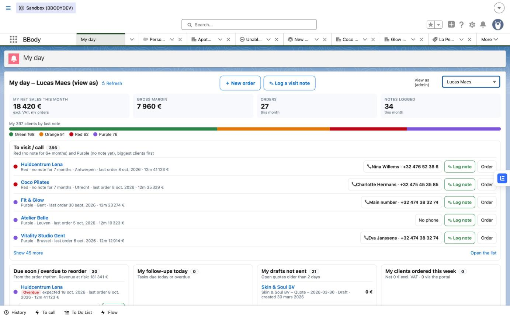
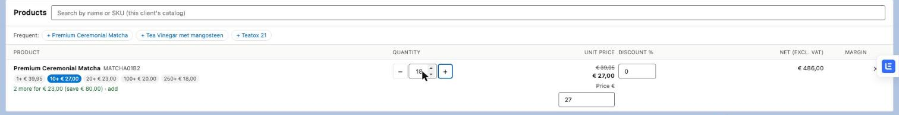

I build the systems businesses run on.Construo os sistemas que fazem as empresas funcionar.Je construis les systèmes qui font tourner les entreprises.Ik bouw de systemen waarop bedrijven draaien.
Salesforce solution architect and Apex developer, 8 years on Salesforce. I connect Salesforce to Shopify, build Sales Cloud CRMs that sales teams actually use, and automate the rest with AI. Delivered end to end, at a fixed price, by LMIDM Group.Architecte solution Salesforce et développeur Apex, 8 ans sur Salesforce. Je connecte Salesforce à Shopify, je construis des CRM Sales Cloud que les commerciaux utilisent vraiment, et j'automatise le reste avec l'IA. Livré de bout en bout, à prix fixe, par LMIDM Group.Arquiteto de soluções Salesforce e desenvolvedor Apex, 8 anos em Salesforce. Conecto o Salesforce ao Shopify, construo CRMs Sales Cloud que os vendedores realmente usam e automatizo o resto com IA. Entregue de ponta a ponta, a preço fechado, pela LMIDM Group.Salesforce-solution architect en Apex-ontwikkelaar, 8 jaar ervaring met Salesforce. Ik koppel Salesforce aan Shopify, bouw Sales Cloud-CRM's die verkoopteams echt gebruiken, en automatiseer de rest met AI. Van begin tot eind opgeleverd, tegen een vaste prijs, door LMIDM Group.
Salesforce Apex → Lightning Web Components → Salesforce ↔ Shopify Plus B2B → Sales Cloud CRMs → Data migration → AI agents → AI automation → Python → Built and shipped solo →Salesforce Apex → Lightning Web Components → Salesforce ↔ Shopify Plus B2B → CRMs Sales Cloud → Migração de dados → Agentes de IA → Automação com IA → Python → Feito e entregue por mim →Salesforce Apex → Lightning Web Components → Salesforce ↔ Shopify Plus B2B → CRM Sales Cloud → Migration de données → Agents IA → Automatisation IA → Python → Conçu et livré seul →Salesforce Apex → Lightning Web Components → Salesforce ↔ Shopify Plus B2B → Sales Cloud-CRM's → Datamigratie → AI-agents → AI-automatisering → Python → Alleen ontworpen en opgeleverd →
You already have SalesforceVous avez déjà SalesforceVocê já tem SalesforceU hebt al Salesforce
You pay for Salesforce. Does it pay you back?Vous payez Salesforce. Est-ce qu'il vous rapporte ?Você paga pelo Salesforce. Ele dá retorno?U betaalt voor Salesforce. Brengt het iets op?
Most of the orgs I open have the same symptoms. If you recognise two of them, the problem is not the tool: it is how it was set up.La plupart des orgs que j'ouvre ont les mêmes symptômes. Si vous en reconnaissez deux, le problème n'est pas l'outil : c'est la façon dont il a été mis en place.A maioria das orgs que abro tem os mesmos sintomas. Se você reconhece dois deles, o problema não é a ferramenta: é como ela foi implantada.De meeste orgs die ik open, hebben dezelfde symptomen. Herkent u er twee, dan ligt het probleem niet aan de tool, maar aan hoe ze werd opgezet.
Reps work around itLes commerciaux le contournentOs vendedores contornamDe verkopers werken eromheen
Orders and notes live in Excel, email and WhatsApp. Salesforce gets updated on Friday, if at all.Commandes et notes vivent dans Excel, les e-mails et WhatsApp. Salesforce est mis à jour le vendredi, quand il l'est.Pedidos e notas vivem no Excel, no e-mail e no WhatsApp. O Salesforce é atualizado na sexta, quando é.Bestellingen en notities zitten in Excel, mail en WhatsApp. Salesforce wordt op vrijdag bijgewerkt, als het al gebeurt.
Nobody trusts the reportsPersonne ne croit les rapportsNinguém confia nos relatóriosNiemand vertrouwt de rapporten
Duplicates, empty fields, three versions of the same client. Management rebuilds the numbers in a spreadsheet.Doublons, champs vides, trois versions du même client. La direction refait les chiffres dans un tableur.Duplicidades, campos vazios, três versões do mesmo cliente. A diretoria refaz os números numa planilha.Dubbels, lege velden, drie versies van dezelfde klant. Het management herberekent de cijfers in een spreadsheet.
Zapier or Make chains between the CRM, the shop and accounting. When one breaks, nobody knows until a client complains.Des chaînes Zapier ou Make entre le CRM, la boutique et la compta. Quand l'une casse, personne ne le sait avant qu'un client se plaigne.Cadeias Zapier ou Make entre o CRM, a loja e a contabilidade. Quando uma quebra, ninguém sabe até um cliente reclamar.Zapier- of Make-ketens tussen het CRM, de webshop en de boekhouding. Als er een breekt, weet niemand het tot een klant klaagt.
Licences paid, little usedDes licences payées, peu utiliséesLicenças pagas, pouco usadasBetaalde licenties, weinig gebruikt
Some users never log in, others share an account. The bill grows every year, the use does not.Certains utilisateurs ne se connectent jamais, d'autres partagent un compte. La facture grimpe chaque année, l'usage non.Alguns usuários nunca entram, outros compartilham uma conta. A conta sobe todo ano, o uso não.Sommige gebruikers loggen nooit in, anderen delen een account. De factuur stijgt elk jaar, het gebruik niet.
Nobody dares to touch itPlus personne n'ose y toucherNinguém ousa mexerNiemand durft er nog aan te komen
The integrator left, the code is undocumented, and every change is a risk. So nothing changes.L'intégrateur est parti, le code n'est pas documenté, et chaque changement est un risque. Alors rien ne change.O integrador foi embora, o código não está documentado e cada mudança é um risco. Então nada muda.De integrator is weg, de code is niet gedocumenteerd en elke wijziging is een risico. Dus verandert er niets.
No one says who to callRien ne dit qui appelerNada diz quem ligarNiets zegt wie te bellen
The data is there, but no rep sees in the morning which client is late, at risk, or ready to buy more.Les données sont là, mais aucun commercial ne voit le matin quel client est en retard, à risque ou prêt à acheter plus.Os dados estão lá, mas nenhum vendedor vê de manhã qual cliente está atrasado, em risco ou pronto para comprar mais.De data is er, maar geen enkele verkoper ziet 's ochtends welke klant te laat is, risico loopt of klaar is om meer te kopen.
Architect and developer.Architecte et développeur.Arquiteto e desenvolvedor.Architect en ontwikkelaar.
One person from the first workshop to go-live: I design the solution, code the Apex and train your team. No hand-off, nothing lost in translation.Une seule personne, du premier atelier à la mise en production : je conçois la solution, je code l'Apex et je forme votre équipe. Aucun passage de relais, rien ne se perd en route.Uma só pessoa, do primeiro workshop ao go-live: desenho a solução, codifico o Apex e treino sua equipe. Sem repasses, nada se perde no caminho.Eén persoon, van de eerste workshop tot de livegang: ik ontwerp de oplossing, schrijf de Apex-code en train uw team. Geen overdracht, niets dat onderweg verloren gaat.
Solution architectArchitecte solutionArquiteto de soluçõesSolution architectApex / LWC developerDéveloppeur Apex / LWCDesenvolvedor Apex / LWCApex- / LWC-ontwikkelaarShopify integrationsIntégrations ShopifyIntegrações ShopifyShopify-integratiesAI agentsAgents IAAgentes de IAAI-agentsAI automationAutomatisation IAAutomação com IAAI-automatiseringData migrationMigration de donnéesMigração de dadosDatamigratieTrainingFormationTreinamentoOpleidingEx-Corporate Finance · M&AEx-Corporate Finance · M&AEx-Corporate Finance · M&AEx-Corporate Finance · M&A
8 years8 ans8 anos8 jaar
on Salesforce: Deloitte Digital, then freelance since 2021. Before that, Corporate Finance at Deloittesur Salesforce : Deloitte Digital, puis freelance depuis 2021. Avant ça, Corporate Finance chez Deloitteem Salesforce: Deloitte Digital, depois freelance desde 2021. Antes, Corporate Finance na Deloittemet Salesforce: Deloitte Digital, daarna freelance sinds 2021. Daarvoor Corporate Finance bij Deloitte
10 days10 jours10 dias10 dagen
to deliver a complete custom CRM, from analysis to trainingpour livrer un CRM complet sur mesure, de l'analyse à la formationpara entregar um CRM completo sob medida, da análise ao treinamentoom een volledig CRM op maat op te leveren, van analyse tot opleiding
≈90%≈90 %≈90%≈90%
of Bbody's revenue goes through Salesforce 6 weeks after go-live, from 0 before. Every rep now sees each day who to call back and what to offer: 40 dormant clients ordered again in those weeksdu chiffre d'affaires de Bbody passe par Salesforce 6 semaines après la mise en production, contre 0 avant. Chaque commercial voit chaque jour qui relancer et quoi proposer : 40 clients endormis ont repassé commande sur la périodedo faturamento da Bbody passa pelo Salesforce 6 semanas após o go-live, contra 0 antes. Cada vendedor vê todo dia quem contatar e o que oferecer: 40 clientes inativos voltaram a comprar no períodovan de omzet van Bbody loopt via Salesforce, 6 weken na de livegang, tegenover 0 ervoor. Elke vertegenwoordiger ziet elke dag wie hij moet opvolgen en wat hij kan voorstellen: 40 slapende klanten bestelden opnieuw in die periode
× 4
direct sales at Restex Recovery in 2026, with AI on every step (Shopify, Jan–Nov, year on year)de ventes en direct chez Restex Recovery en 2026, avec l'IA à chaque étape (Shopify, janv.–nov., sur un an)de vendas diretas na Restex Recovery em 2026, com IA em cada etapa (Shopify, jan–nov, ano contra ano)rechtstreekse verkoop bij Restex Recovery in 2026, met AI in elke stap (Shopify, jan.–nov., op jaarbasis)
Why a consultant who codes?Pourquoi un consultant qui code ?Por que um consultor que programa?Waarom een consultant die codeert?
Most projects fail because the developer never understood the real problem. Before coding, I spent my career on the business side: corporate finance and M&A at Deloitte, strategy, business development, founding brands. I know these markets and how their industries work: how they sell, buy, invoice and make their margin.La plupart des projets ratent parce que le développeur n'a pas compris le vrai problème. Avant de coder, j'ai passé ma carrière côté business : corporate finance et M&A chez Deloitte, stratégie, business development, création de marques. Je connais ces marchés et la façon dont leurs industries fonctionnent : comment elles vendent, achètent, facturent et font leur marge.A maioria dos projetos falha porque o desenvolvedor nunca entendeu o problema real. Antes de programar, passei minha carreira do lado do negócio: corporate finance e M&A na Deloitte, estratégia, business development, criação de marcas. Conheço esses mercados e como suas indústrias funcionam: como vendem, compram, faturam e fazem sua margem.De meeste projecten mislukken omdat de ontwikkelaar het echte probleem nooit heeft begrepen. Voor ik begon te coderen, heb ik mijn hele loopbaan aan de businesskant gewerkt: corporate finance en M&A bij Deloitte, strategie, business development, merken oprichten. Ik ken deze markten en weet hoe hun sectoren werken: hoe ze verkopen, inkopen, factureren en hun marge maken.
So we talk margin, processes and valuation first, then I build the tool that moves those numbers.On parle donc d'abord marge, process et valorisation, puis je construis l'outil qui fait bouger ces chiffres.Então falamos primeiro de margem, processos e valuation, e depois construo a ferramenta que move esses números.Dus praten we eerst over marge, processen en waardering, en daarna bouw ik de tool die die cijfers in beweging zet.
Markets I know from the inside →Des marchés que je connais de l'intérieur →Mercados que conheço por dentro →Markten die ik van binnenuit ken →
M&ATransactions · Corporate Finance at DeloitteTransactions · Corporate Finance chez DeloitteTransactions · Corporate Finance na DeloitteTransactions · Corporate Finance bij Deloitte
EnergyÉnergieEnergiaEnergieSolar & storage business development, Helexia (Voltalia Group)Business development solaire et stockage, Helexia (groupe Voltalia)Business development solar e armazenamento, Helexia (Grupo Voltalia)Business development zonne-energie en opslag, Helexia (Voltalia-groep)
Food & e-commerceAlimentaire & e-commerceAlimentos & e-commerceVoeding & e-commerceFounder of Drive Me Nuts and Restex Recovery: production, Amazon, ShopifyFondateur de Drive Me Nuts et Restex Recovery : production, Amazon, ShopifyFundador da Drive Me Nuts e da Restex Recovery: produção, Amazon, ShopifyOprichter van Drive Me Nuts en Restex Recovery: productie, Amazon, Shopify
RecruitmentRecrutementRecrutamentoRekruteringCRMs for Perspective Blue and ArbalettCRM pour Perspective Blue et ArbalettCRMs para Perspective Blue e ArbalettCRM's voor Perspective Blue en Arbalett
Banking & insuranceBanque & assuranceBanco & segurosBank & verzekeringenBNP Paribas Fortis, then AXA and banking programmes at Deloitte DigitalBNP Paribas Fortis, puis programmes AXA et bancaires chez Deloitte DigitalBNP Paribas Fortis, depois programas AXA e bancários na Deloitte DigitalBNP Paribas Fortis, daarna AXA- en bankprogramma's bij Deloitte Digital
Price fixed before we start.Prix fixé avant de commencer.Preço fechado antes de começar.Prijs vastgelegd voor we starten.Fixed-scope packages, no runaway hourly billing.Forfaits à périmètre fermé, pas de régie qui dérape.Pacotes de escopo fechado, sem horas que estouram.Pakketten met een afgebakende scope, geen uurfacturatie die ontspoort.
You talk to someone who codes and understands your business.Vous parlez à quelqu'un qui code et qui comprend votre métier.Você fala com alguém que programa e entende o seu negócio.U praat met iemand die codeert en uw business begrijpt.No salesperson, no junior: a former consultant who asks the right business questions, then builds.Pas de commercial, pas de junior : un ancien consultant qui pose les bonnes questions business, puis qui construit.Sem vendedor, sem júnior: um ex-consultor que faz as perguntas certas de negócio e depois constrói.Geen verkoper, geen junior: een ex-consultant die de juiste businessvragen stelt en daarna bouwt.
Delivered documented.Livré documenté.Entregue documentado.Gedocumenteerd opgeleverd.101 pages and a user guide at Bbody: you are never dependent on me.101 pages et un guide utilisateur chez Bbody : vous ne dépendez jamais de moi.101 páginas e um guia do usuário na Bbody: você nunca depende de mim.101 pagina's en een gebruikershandleiding bij Bbody: u bent nooit van mij afhankelijk.
Reply within 48 h.Réponse sous 48 h.Resposta em 48 h.Antwoord binnen 48 u. FR · EN · NL · PT
Bbody, before / afterBbody, avant / aprèsBbody, antes / depoisBbody, voor / na
BeforeAvantAntesVoor
AfterAprèsDepoisNa
Prices retyped by handPrix ressaisis à la mainPreços redigitados à mãoPrijzen met de hand overgetikt
Catalog prices and volume tiers applied automaticallyPrix du catalogue et paliers appliqués automatiquementPreços do catálogo e faixas aplicados automaticamenteCatalogusprijzen en staffels automatisch toegepast
CRM cut off from the shopCRM coupé de la boutiqueCRM desconectado da lojaCRM losgekoppeld van de webshop
Two-way sync: clients, contacts, orders, productsSynchronisation dans les deux sens : clients, contacts, commandes, produitsSincronização nos dois sentidos: clientes, contatos, pedidos, produtosSynchronisatie in beide richtingen: klanten, contactpersonen, bestellingen, producten
A fragile 24-step Zapier chainUne chaîne Zapier fragile de 24 étapesUma cadeia Zapier frágil de 24 etapasEen fragiele Zapier-keten van 24 stappen
Native Apex, monitored, with errors explained in plain languageApex natif, supervisé, erreurs expliquées en clairApex nativo, monitorado, erros explicados em linguagem simplesNative Apex, gemonitord, foutmeldingen in duidelijke taal
0 orders in Salesforce0 commande dans Salesforce0 pedidos no Salesforce0 bestellingen in Salesforce
85% of orders, 88% of revenue85 % des commandes, 88 % du chiffre d'affaires85% dos pedidos, 88% do faturamento85% van de bestellingen, 88% van de omzet
01B2B wellness brand, Belgium & Netherlands · 2023 → 2026marca B2B de bem-estar, Bélgica e Holanda · 2023 → 2026marque bien-être B2B, Belgique et Pays-Bas · 2023 → 2026B2B-wellnessmerk, België & Nederland · 2023 → 2026
Salesforce and Shopify Plus B2B working as one tool, in native Apex.Salesforce e Shopify Plus B2B funcionando como uma só ferramenta, em Apex nativo.Salesforce et Shopify Plus B2B qui fonctionnent comme un seul outil, en Apex natif.Salesforce en Shopify Plus B2B die werken als één tool, in native Apex.
Role: lead Salesforce Apex developer & integration architectPapel: desenvolvedor Apex líder e arquiteto da integraçãoRôle : développeur Apex principal et architecte de l'intégrationRol: lead Salesforce Apex-ontwikkelaar & integratiearchitect
Sales Cloud set-up, then a full two-way integration.Implantação do Sales Cloud e depois uma integração completa nos dois sentidos.Mise en place de Sales Cloud, puis intégration complète dans les deux sens.Implementatie van Sales Cloud, daarna een volledige integratie in beide richtingen.
The sales team sells to salons, pharmacies and retailers through a Shopify Plus B2B portal. Before: a fragile 24-node Zapier chain, prices retyped by hand, a CRM cut off from the shop. After: accounts, contacts, orders, products and prices flow both ways, and the team takes orders in Salesforce.O time comercial vende para institutos, farmácias e varejistas por um portal Shopify Plus B2B. Antes: uma cadeia Zapier frágil de 24 nós, preços redigitados à mão, um CRM desconectado da loja. Depois: contas, contatos, pedidos, produtos e preços fluem nos dois sentidos, e o time tira pedidos no Salesforce.L'équipe commerciale vend à des instituts, pharmacies et revendeurs via un portail Shopify Plus B2B. Avant : une chaîne Zapier fragile de 24 étapes, des prix ressaisis à la main, un CRM coupé de la boutique. Après : clients, contacts, commandes, produits et prix circulent dans les deux sens, et l'équipe prend ses commandes dans Salesforce.Het verkoopteam verkoopt aan schoonheidsinstituten, apotheken en verdelers via een Shopify Plus B2B-portaal. Voor: een fragiele Zapier-keten van 24 stappen, prijzen met de hand overgetikt, een CRM losgekoppeld van de webshop. Na: klanten, contactpersonen, bestellingen, producten en prijzen stromen in beide richtingen, en het team neemt bestellingen op in Salesforce.
Order screen with Shopify catalog prices, volume tiers and justified negotiated pricesTela de pedido com preços do catálogo Shopify, faixas de volume e preços negociados justificadosÉcran de commande avec les prix du catalogue Shopify, les paliers de volume et des prix négociés motivésBestelscherm met de Shopify-catalogusprijzen, volumestaffels en onderbouwde onderhandelde prijzen
HMAC-signed webhooks, anti-loop and anti-duplicate locks, idempotent order sending, automatic retryWebhooks assinados HMAC, travas anti-loop e anti-duplicidade, envio idempotente, retry automáticoWebhooks signés HMAC, verrous anti-boucle et anti-doublon, envoi idempotent des commandes, reprise automatiqueHMAC-ondertekende webhooks, anti-lus- en anti-dubbelslotten, idempotente verzending van bestellingen, automatische herpoging
EU VAT checked against VIES, owner assigned by postcode, errors explained in plain language with a Fix buttonIVA europeu validado no VIES, responsável atribuído por CEP, erros explicados em linguagem simples com botão CorrigirTVA intracommunautaire vérifiée sur VIES, commercial attribué par code postal, erreurs expliquées en clair avec un bouton CorrigerIntracommunautair btw-nummer gecontroleerd via VIES, vertegenwoordiger toegewezen op basis van postcode, foutmeldingen in duidelijke taal met een knop Corrigeren
"My day" for each rep, team ranking vs last year, win-back lists, management dashboards"Meu dia" para cada vendedor, ranking vs. ano anterior, listas de reconquista, dashboards de gestão« Ma journée » pour chaque commercial, classement de l'équipe face à l'an passé, listes de clients à reconquérir, tableaux de bord de direction"Mijn dag" voor elke vertegenwoordiger, teamranking tegenover vorig jaar, lijsten met klanten om terug te winnen, managementdashboards
≈90%≈90 %≈90%≈90%
of revenue now runs through Salesforce, six weeks after go-live. From zero before.du chiffre d'affaires passe par Salesforce six semaines après la bascule. Contre zéro avant.do faturamento passa pelo Salesforce seis semanas após o go-live. Contra zero antes.van de omzet loopt via Salesforce, zes weken na de livegang. Tegenover nul ervoor.
×2×2×2×2
dormant clients won back: 40 reordered in six weeks, twice the usual paceclients endormis reconquis : 40 ont repassé commande en six semaines, deux fois le rythme habituelclientes inativos reconquistados: 40 voltaram a comprar em seis semanas, o dobro do ritmo habitualslapende klanten teruggewonnen: 40 bestelden opnieuw in zes weken, twee keer het gewone tempo
22%22 %22%22%
of revenue in that period came from clients the team thought were lostdu chiffre d'affaires de la période vient de clients que l'équipe croyait perdusdo faturamento do período veio de clientes que a equipe dava como perdidosvan de omzet in die periode kwam van klanten die het team als verloren beschouwde
No. 1N° 1Nº 1Nr. 1
October 2026, the go-live month, was the brand's best sales month of the yearoctobre 2026, le mois de la bascule, est le meilleur mois de ventes de l'année pour la marqueoutubro de 2026, o mês do go-live, foi o melhor mês de vendas do ano da marcaoktober 2026, de maand van de livegang, was de beste verkoopmaand van het jaar voor het merk
−70%−70 %−70%−70%
time for a rep to take an order: catalogue prices, volume tiers and VAT filled in on their ownde temps pour un commercial qui prend une commande : prix du catalogue, paliers de volume et TVA se remplissent seulsde tempo para um vendedor registrar um pedido: preços do catálogo, faixas de volume e IVA preenchidos sozinhosminder tijd voor een vertegenwoordiger om een bestelling in te geven: catalogusprijzen, volumestaffels en btw vullen zich vanzelf in
+31%+31 %+31%+31%
upsell rate: 47% of order lines now exceed the client's usual quantity, vs 36% before. The order screen suggests the next volume tier.de taux d'upsell : 47 % des lignes commandées dépassent désormais la quantité habituelle du client, contre 36 % avant. L'écran de commande propose le palier suivant.na taxa de upsell: 47% das linhas pedidas agora superam a quantidade habitual do cliente, contra 36% antes. A tela de pedido sugere a próxima faixa de volume.upsell-ratio: 47% van de bestelregels ligt nu boven de gebruikelijke hoeveelheid van de klant, tegenover 36% ervoor. Het bestelscherm stelt de volgende volumestaffel voor.
Result:Resultado:Résultat :Resultaat:phase 1 live since April 2026, full cutover on 13 October 2026. Before, no order was taken in Salesforce; six weeks later, 85% of orders (88% of revenue) are, and the sales reps use it every day. October 2026 was the brand's best sales month of the year.fase 1 em produção desde abril de 2026, virada completa em 13 de outubro de 2026. Antes, nenhum pedido era feito no Salesforce; seis semanas depois, 85% dos pedidos (88% do faturamento) passam por ele, e os vendedores o usam todos os dias. Outubro de 2026 foi o melhor mês de vendas da marca no ano.phase 1 en production depuis avril 2026, bascule complète le 13 octobre 2026. Avant, aucune commande n'était prise dans Salesforce ; six semaines plus tard, 85 % des commandes (88 % du chiffre d'affaires) y passent, et les commerciaux l'utilisent tous les jours. Octobre 2026 a été le meilleur mois de ventes de l'année pour la marque.fase 1 live sinds april 2026, volledige overschakeling op 13 oktober 2026. Voordien werd geen enkele bestelling in Salesforce genomen; zes weken later loopt 85% van de bestellingen (88% van de omzet) erdoor, en de vertegenwoordigers gebruiken het elke dag. Oktober 2026 was de beste verkoopmaand van het jaar voor het merk.
A true two-way integrationUne vraie intégration dans les deux sensUma integração de verdade nos dois sentidosEen echte integratie in beide richtingen
Salesforce → Shopify
Clients, shop locations and buyers with their B2B portal accessClients, points de vente et acheteurs avec leur accès au portail B2BClientes, lojas e compradores com acesso ao portal B2BKlanten, verkooppunten en inkopers met hun toegang tot het B2B-portaal
Orders taken by reps, with the client's catalog pricesCommandes prises par les commerciaux, aux prix du catalogue du clientPedidos feitos pelos vendedores, com os preços do catálogo do clienteBestellingen opgenomen door de vertegenwoordigers, tegen de catalogusprijzen van de klant
Volume tiers, discounts and negotiated prices with their reasonPaliers de volume, remises et prix négociés avec leur motifFaixas de volume, descontos e preços negociados com o motivoVolumestaffels, kortingen en onderhandelde prijzen met hun motivering
Payment terms, one-off delivery addresses, PO numbersConditions de paiement, adresses de livraison ponctuelles, numéros de bon de commandeCondições de pagamento, endereços de entrega pontuais, números de pedido de compraBetalingsvoorwaarden, eenmalige leveradressen, bestelbonnummers
Shopify → Salesforce
New portal sign-ups, assigned to the right rep by postcodeNouvelles inscriptions au portail, attribuées au bon commercial par code postalNovos cadastros no portal, atribuídos ao vendedor certo por CEPNieuwe registraties op het portaal, op basis van postcode toegewezen aan de juiste vertegenwoordiger
Portal orders and their full historyCommandes passées sur le portail et tout leur historiquePedidos do portal e todo o históricoBestellingen via het portaal en hun volledige historiek
Order status: payment, shipping, tracking link, refunds and cancellationsStatut des commandes : paiement, expédition, lien de suivi, remboursements et annulationsStatus dos pedidos: pagamento, envio, rastreio, reembolsos e cancelamentosStatus van de bestellingen: betaling, verzending, trackinglink, terugbetalingen en annulaties
Products, prices and catalogs, every dayProduits, prix et catalogues, chaque jourProdutos, preços e catálogos, todos os diasProducten, prijzen en catalogi, elke dag
Plus: EU VAT checked against VIES at entry, VAT rules per product, duplicates blocked, and every sync error explained to the rep with a Fix button.En plus : TVA vérifiée sur VIES dès la saisie, règles de TVA par produit, doublons bloqués, et chaque erreur de synchronisation expliquée au commercial avec un bouton Corriger.Além disso: IVA verificado no VIES na digitação, regras de IVA por produto, duplicidades bloqueadas e cada erro de sincronização explicado ao vendedor com um botão Corrigir.Daarnaast: btw-nummer gecontroleerd via VIES bij de invoer, btw-regels per product, dubbels geblokkeerd, en elke synchronisatiefout uitgelegd aan de vertegenwoordiger met een knop Corrigeren.
Every rep knows who to call back, and what to offerChaque commercial sait qui relancer, et quoi proposerCada vendedor sabe quem contatar, e o que oferecerElke vertegenwoordiger weet wie hij moet opvolgen, en wat hij kan voorstellen
38 / 4038 / 4038 / 4038 / 40
win-back orders taken by the reps themselves in Salesforce, not by the back officecommandes de reconquête prises par les commerciaux eux-mêmes dans Salesforce, pas par le back-officepedidos de reconquista feitos pelos próprios vendedores no Salesforce, não pelo back-officeherwinningsbestellingen ingegeven door de vertegenwoordigers zelf in Salesforce, niet door de backoffice
≈×10≈×10≈×10≈×10
visit notes logged per month since go-live: field knowledge stays in the CRMnotes de visite consignées par mois depuis la bascule : ce que le terrain sait reste dans le CRMnotas de visita registradas por mês desde o go-live: o que o campo sabe fica no CRMbezoeknotities per maand sinds de livegang: wat het terrein weet, blijft in het CRM
≈1.5 mo≈1,5 mois≈1,5 mês≈1,5 mnd
of revenue at risk made visible every morning, client by client: who is late on their usual order, and for how muchde chiffre d'affaires à risque rendu visible chaque matin, client par client : qui est en retard sur sa commande habituelle, et pour combiende faturamento em risco visível toda manhã, cliente por cliente: quem está atrasado no pedido habitual, e quanto valeomzet in gevaar elke ochtend zichtbaar, klant per klant: wie zijn gebruikelijke bestelling mist, en voor hoeveel
Each account shows spend, order rhythm, next expected order and talking points (upsell, cross-sell, win back); each rep gets a "My day" list. Source: Bbody's production Salesforce, 13 Oct – 27 Nov 2026, compared with January – mid-October 2026.Chaque fiche client affiche les dépenses, le rythme de commande, la prochaine commande attendue et des arguments (upsell, cross-sell, reconquête) ; chaque commercial a sa liste « Ma journée ». Source : Salesforce de production de Bbody, 13 oct. – 27 nov. 2026, comparé à janvier – mi-octobre 2026.Cada conta mostra gasto, ritmo de pedidos, próximo pedido esperado e argumentos (upsell, cross-sell, reconquista); cada vendedor tem uma lista "Meu dia". Fonte: Salesforce de produção da Bbody, 13 out – 27 nov 2026, comparado com janeiro – meados de outubro de 2026.Elke klantenfiche toont de uitgaven, het bestelritme, de volgende verwachte bestelling en gespreksargumenten (upsell, cross-sell, terugwinnen); elke vertegenwoordiger krijgt een lijst "Mijn dag". Bron: productie-Salesforce van Bbody, 13 okt. – 27 nov. 2026, vergeleken met januari – half oktober 2026.
Client page. Spend, order rhythm, next expected order, and talking points ready for the next visit: reorder overdue, products the client stopped buying (win back), next volume tier (upsell), best sellers never ordered (cross-sell).Página do cliente. Gasto, ritmo de pedidos, próximo pedido esperado e argumentos prontos para a próxima visita: pedido atrasado, produtos que o cliente parou de comprar (reconquista), próxima faixa de volume (upsell), mais vendidos nunca pedidos (cross-sell).Fiche client. Dépenses, rythme de commande, prochaine commande attendue et arguments prêts pour la prochaine visite : commande en retard, produits que le client a arrêté d'acheter (reconquête), prochain palier de volume (upsell), meilleures ventes jamais commandées (cross-sell).Klantenfiche. Uitgaven, bestelritme, volgende verwachte bestelling en argumenten klaar voor het volgende bezoek: bestelling te laat, producten die de klant niet meer koopt (terugwinnen), volgende volumestaffel (upsell), bestsellers die nooit besteld werden (cross-sell).

"My day" for each sales rep. Monthly sales and margin, clients coloured by last contact, who to visit or call first, clients overdue to reorder with the revenue at risk, drafts not sent."Meu dia" para cada vendedor. Vendas e margem do mês, clientes coloridos pelo último contato, quem visitar ou ligar primeiro, clientes com pedido atrasado e a receita em risco, rascunhos não enviados.« Ma journée » pour chaque commercial. Ventes et marge du mois, clients colorés selon le dernier contact, qui visiter ou appeler en premier, clients en retard de commande avec le chiffre d'affaires en jeu, brouillons non envoyés."Mijn dag" voor elke vertegenwoordiger. Verkoop en marge van de maand, klanten ingekleurd volgens het laatste contact, wie eerst bezoeken of bellen, klanten die te laat zijn met bestellen met de omzet die op het spel staat, niet-verzonden ontwerpen.

Volume tiers apply on their own, and the order screen suggests the next tier.As faixas de volume se aplicam sozinhas e a tela sugere a próxima.Les paliers de volume s'appliquent seuls, et l'écran de commande suggère le palier suivant.Volumestaffels worden vanzelf toegepast, en het bestelscherm stelt de volgende staffel voor.A negotiated price requires a reason, carried through to the Shopify invoice.Um preço negociado exige um motivo, levado até a fatura Shopify.Un prix négocié exige un motif, repris jusqu'à la facture Shopify.Een onderhandelde prijs vereist een motivering, die doorgaat tot op de Shopify-factuur.
Real Bbody interface (sandbox). Client names, contacts and some figures replaced with demo data.Interface real da Bbody (sandbox). Nomes de clientes, contatos e alguns números substituídos por dados de demonstração.Interface réelle de Bbody (sandbox). Noms de clients, contacts et certains chiffres remplacés par des données de démonstration.Echte interface van Bbody (sandbox). Klantnamen, contactpersonen en sommige cijfers vervangen door demogegevens.
“Our company was introduced to Louis almost 2 years ago. Over that timeframe Louis has shown tremendous IT skills and overdelivered on all our projects. Always available and always cost-effective. As a business owner I would definitely recommend Louis!”« Notre entreprise a été présentée à Louis il y a près de deux ans. Depuis, Louis a fait preuve de compétences informatiques remarquables et a dépassé les attentes sur tous nos projets. Toujours disponible, et toujours au juste prix. En tant que chef d'entreprise, je recommande Louis sans hésiter ! »“Nossa empresa conheceu o Louis há quase dois anos. Desde então, o Louis demonstrou enormes competências em TI e superou as expectativas em todos os nossos projetos. Sempre disponível e sempre com ótimo custo-benefício. Como empresário, recomendo o Louis sem hesitar!”“Ons bedrijf maakte bijna twee jaar geleden kennis met Louis. In die tijd heeft Louis enorme IT-vaardigheden getoond en op al onze projecten meer geleverd dan verwacht. Altijd beschikbaar en altijd kostenefficiënt. Als ondernemer kan ik Louis zeker aanbevelen!”
Recommendation left on Malt, November 2026.Recommandation laissée sur Malt en novembre 2026, traduite de l'anglais.Recomendação deixada no Malt em novembro de 2026, traduzida do inglês.Aanbeveling achtergelaten op Malt in november 2026, vertaald uit het Engels.
A full recruitment CRM on Sales Cloud, still in use five years later.Um CRM de recrutamento completo no Sales Cloud, ainda em uso cinco anos depois.Un CRM de recrutement complet sur Sales Cloud, toujours utilisé cinq ans plus tard.Een volledig rekruterings-CRM op Sales Cloud, vijf jaar later nog altijd in gebruik.
Role: Salesforce consultant & developer, end to endPapel: consultor e desenvolvedor Salesforce, de ponta a pontaRôle : consultant et développeur Salesforce, de bout en boutRol: Salesforce-consultant & -ontwikkelaar, van begin tot eind
Three partners recruiting from spreadsheets and a shared inbox. Now every consultant works from their lists of candidates, jobs, applications and interviews, and partners get a dashboard per consultant.Três sócios recrutando com planilhas e uma caixa de e-mail compartilhada. Agora cada consultor trabalha a partir das suas listas de candidatos, vagas, candidaturas e entrevistas, e os sócios têm um dashboard por consultor.Trois associés qui recrutaient avec des tableurs et une boîte mail partagée. Aujourd'hui, chaque consultant travaille depuis ses listes de candidats, offres, candidatures et entretiens, et les associés ont un tableau de bord par consultant.Drie vennoten die rekruteerden met spreadsheets en een gedeelde mailbox. Vandaag werkt elke consultant vanuit zijn lijsten met kandidaten, vacatures, sollicitaties en gesprekken, en de vennoten hebben een dashboard per consultant.
Data model: candidate → job → application → interview → placementModelo de dados: candidato → vaga → candidatura → entrevista → colocaçãoModèle de données : candidat → offre → candidature → entretien → placementDatamodel: kandidaat → vacature → sollicitatie → gesprek → plaatsing
A passed interview creates the placement automatically; approval process above a deal thresholdEntrevista aprovada cria a colocação automaticamente; aprovação acima de um valor de negócioUn entretien réussi crée le placement automatiquement ; validation obligatoire au-delà d'un montantEen geslaagd gesprek maakt automatisch de plaatsing aan; goedkeuring verplicht boven een bepaald bedrag
Outlook integration, two security profiles, activity and pipeline dashboardsIntegração com Outlook, dois perfis de segurança, dashboards de atividade e pipelineIntégration Outlook, deux profils de sécurité, tableaux de bord d'activité et de pipelineOutlook-integratie, twee beveiligingsprofielen, dashboards voor activiteit en pipeline
Result:Resultado:Résultat :Resultaat:delivered in 10 days, from analysis to training. Still used and extended in 2026.entregue em 10 dias, da análise ao treinamento. Ainda em uso e evoluindo em 2026.livré en 10 jours, de l'analyse à la formation. Toujours utilisé et enrichi en 2026.opgeleverd in 10 dagen, van analyse tot opleiding. In 2026 nog altijd in gebruik en verder uitgebreid.
From Bullhorn to Salesforce without losing the history.Do Bullhorn ao Salesforce sem perder o histórico.De Bullhorn à Salesforce sans perdre l'historique.Van Bullhorn naar Salesforce zonder de historiek te verliezen.
Role: Salesforce consultant, developer & data migration leadPapel: consultor, desenvolvedor Salesforce e líder da migraçãoRôle : consultant, développeur Salesforce et responsable de la migrationRol: Salesforce-consultant, -ontwikkelaar & verantwoordelijke datamigratie
An engineering, real-estate, technical sales and IT recruiter whose tool no longer matched its processes. Partners couldn't see monthly deal value per consultant, and consultants could export the database.Uma consultoria de engenharia, imobiliário, vendas técnicas e TI cuja ferramenta não acompanhava mais os processos. Os sócios não viam o valor mensal por consultor, e os consultores podiam exportar a base.Un cabinet spécialisé ingénierie, immobilier, vente technique et IT dont l'outil ne suivait plus les process. Les associés ne voyaient pas la valeur mensuelle par consultant, et les consultants pouvaient exporter la base.Een kantoor gespecialiseerd in engineering, vastgoed, technische verkoop en IT, waarvan de tool de processen niet meer volgde. De vennoten zagen de maandelijkse waarde per consultant niet, en de consultants konden de database exporteren.
Accounts, candidates, contacts and jobs migrated with Data Loader: mapping, dedup, sandbox pass, then production over a weekendContas, candidatos, contatos e vagas migrados com Data Loader: mapeamento, deduplicação, teste em sandbox e produção num fim de semanaComptes, candidats, contacts et offres migrés avec Data Loader : mapping, dédoublonnage, passage en sandbox, puis production sur un week-endAccounts, kandidaten, contactpersonen en vacatures gemigreerd met Data Loader: mapping, ontdubbeling, test in sandbox, daarna productie in één weekend
Monthly value per consultant dashboards; export locked for the consultant profileDashboards de valor mensal por consultor; exportação bloqueada no perfil consultorTableaux de bord de valeur mensuelle par consultant ; export bloqué pour le profil consultantDashboards met de maandelijkse waarde per consultant; export geblokkeerd voor het consultantprofiel
Result:Resultado:Résultat :Resultaat:live in three months, history kept, 8 users trained and the firm running its own day-to-day admin.em produção em três meses, histórico preservado, 8 usuários treinados e a empresa autônoma na administração do dia a dia.en service en trois mois, historique conservé, 8 utilisateurs formés et cabinet autonome sur l'administration courante.live in drie maanden, historiek bewaard, 8 gebruikers opgeleid en het kantoor zelfstandig voor het dagelijkse beheer.
04my own DTC brand, Shopify + Amazon, 5 countries · 2022 →minha marca DTC, Shopify + Amazon, 5 países · 2022 →ma propre marque DTC, Shopify + Amazon, 5 pays · 2022 →mijn eigen DTC-merk, Shopify + Amazon, 5 landen · 2022 →
An e-commerce brand that runs on autopilot, with AI.Uma marca de e-commerce que roda no piloto automático, com IA.Une marque e-commerce qui tourne en pilote automatique, avec l'IA.Een e-commercemerk dat op automatische piloot draait, met AI.
Role: founder, Python & AI automation developerPapel: fundador, desenvolvedor Python e automação com IARôle : fondateur, développeur Python et automatisation IARol: oprichter, Python- & AI-automatiseringsontwikkelaar
My permanent test bench for what I then build for clients: everything an e-commerce operator does by hand, turned into scheduled jobs.Meu laboratório permanente para o que depois construo para clientes: tudo o que um operador de e-commerce faz à mão, transformado em jobs agendados.Mon banc d'essai permanent pour ce que je construis ensuite pour mes clients : tout ce qu'un e-commerçant fait à la main, transformé en tâches planifiées.Mijn permanente testbank voor wat ik daarna voor klanten bouw: alles wat een e-commerceondernemer met de hand doet, omgezet in geplande taken.
AI support agent (Claude) on the site, escalation to TelegramAgente de suporte com IA (Claude) no site, escalonamento para o TelegramAgent de support IA (Claude) sur le site, escalade sur TelegramAI-supportagent (Claude) op de site, escalatie via Telegram
17 scheduled jobs: order routing, FBA refund audit, invoices to accounting, P&L per channel17 tarefas agendadas: roteamento de pedidos, auditoria de reembolsos FBA, notas para a contabilidade, P&L por canal17 tâches planifiées : routage des commandes, audit des remboursements FBA, factures vers la compta, P&L par canal17 geplande taken: routering van bestellingen, audit van FBA-terugbetalingen, facturen naar de boekhouding, P&L per kanaal
Amazon tracking → Shopify → Klaviyo every 15 minutesRastreio Amazon → Shopify → Klaviyo a cada 15 minutosSuivi colis Amazon → Shopify → Klaviyo toutes les 15 minutesAmazon-tracking → Shopify → Klaviyo om de 15 minuten
Result:Resultado:Résultat :Resultaat:91% open rate on "shipped" emails, an AI support agent that cost ≈ $0.50 in 7 months, no manual data entry in the brand's daily routine.91% de abertura nos e-mails de envio, um agente de suporte com IA que custou ≈ 0,50 $ em 7 meses, nenhuma digitação manual no dia a dia da marca.91 % d'ouverture sur les emails « expédié », un agent de support IA qui a coûté ≈ 0,50 $ en 7 mois, aucune saisie manuelle au quotidien.91% openingsratio op de e-mails "verzonden", een AI-supportagent die ≈ $ 0,50 kostte in 7 maanden, geen handmatige invoer meer in de dagelijkse werking van het merk.
Three years of enterprise Salesforce programmes before going freelance.Três anos de programas Salesforce em grandes contas antes do freelance.Trois ans de programmes Salesforce grands comptes avant le freelance.Drie jaar Salesforce-programma's bij grote ondernemingen voor ik freelancer werd.
Role: Salesforce consultant & developerPapel: consultor e desenvolvedor SalesforceRôle : consultant et développeur SalesforceRol: Salesforce-consultant & -ontwikkelaar
At Deloitte I worked on both sides: first Transactions · Corporate Finance (M&A), then Deloitte Digital on Salesforce. Sales Cloud and Service Cloud for insurance (AXA), banking and life sciences, a proof of concept for the Brussels-Capital Region, in teams of 5 to 30. Functional analysis, configuration, UAT, training, then delivery coordination.Chez Deloitte, j'ai fait les deux : d'abord Transactions · Corporate Finance (M&A), puis Deloitte Digital sur Salesforce. Sales Cloud et Service Cloud pour l'assurance (AXA), la banque et les life sciences, un proof of concept pour la Région de Bruxelles-Capitale, dans des équipes de 5 à 30 personnes. Analyse fonctionnelle, configuration, recette, formation, puis coordination de la livraison.Na Deloitte, fiz os dois: primeiro Transactions · Corporate Finance (M&A), depois Deloitte Digital em Salesforce. Sales Cloud e Service Cloud para seguros (AXA), bancos e life sciences, uma prova de conceito para a Região de Bruxelas-Capital, em times de 5 a 30 pessoas. Análise funcional, configuração, UAT, treinamento e depois coordenação de entrega.Bij Deloitte heb ik aan beide kanten gewerkt: eerst Transactions · Corporate Finance (M&A), daarna Deloitte Digital op Salesforce. Sales Cloud en Service Cloud voor verzekeringen (AXA), banken en life sciences, een proof of concept voor het Brussels Hoofdstedelijk Gewest, in teams van 5 tot 30 mensen. Functionele analyse, configuratie, gebruikerstests, opleiding, daarna coördinatie van de oplevering.
What it brings today:O que isso traz hoje:Ce que ça apporte aujourd'hui :Wat het vandaag oplevert:integrator standards (sandbox, tests, documentation, training) at the scale and cost of a small business.padrões de integrador (sandbox, testes, documentação, treinamento) na escala e no custo de uma pequena empresa.les standards d'un intégrateur (sandbox, tests, documentation, formation) à l'échelle et au coût d'une PME.de standaarden van een integrator (sandbox, tests, documentatie, opleiding) op de schaal en tegen de kostprijs van een kmo.
Case study · Restex Recovery · my own brand · 2025 → 2026Étude de cas · Restex Recovery · ma propre marque · 2025 → 2026Estudo de caso · Restex Recovery · minha própria marca · 2025 → 2026Case · Restex Recovery · mijn eigen merk · 2025 → 2026
How a brand selling 92% on Amazon multiplied its direct sales by four.Comment une marque vendue à 92 % sur Amazon a multiplié par quatre ses ventes en direct.Como uma marca que vendia 92% na Amazon multiplicou por quatro suas vendas diretas.Hoe een merk dat 92% via Amazon verkocht zijn rechtstreekse verkoop verviervoudigde.
Restex Recovery sells compression recovery boots at €599.99 on Amazon in five countries and on its Shopify store. At the end of 2025 the store made 8% of sales. In 2026, with no ad budget for the store, I plugged AI into every step: being found, answering, following up, delivering. Here is what worked, with figures checked in Shopify, and what didn't.Restex Recovery vend des bottes de pressothérapie à 599,99 €, sur Amazon dans cinq pays et sur sa boutique Shopify. Fin 2025, la boutique faisait 8 % des ventes. En 2026, sans budget publicitaire pour la boutique, j'ai branché l'IA sur chaque étape : être trouvé, répondre, relancer, livrer. Voici ce qui a marché, chiffres vérifiés dans Shopify, et ce qui n'a pas marché.A Restex Recovery vende botas de pressoterapia a 599,99 € na Amazon em cinco países e na sua loja Shopify. No fim de 2025, a loja fazia 8% das vendas. Em 2026, sem orçamento de anúncios para a loja, conectei a IA a cada etapa: ser encontrado, responder, fazer follow-up, entregar. Eis o que funcionou, com números verificados no Shopify, e o que não funcionou.Restex Recovery verkoopt compressielaarzen voor recuperatie aan € 599,99, op Amazon in vijf landen en in zijn eigen Shopify-webshop. Eind 2025 was de webshop goed voor 8% van de verkoop. In 2026, zonder reclamebudget voor de webshop, heb ik AI ingezet in elke stap: gevonden worden, antwoorden, opvolgen, leveren. Dit is wat werkte, met cijfers gecontroleerd in Shopify, en wat niet werkte.
× 4
Shopify sales over the year: 1 January to 23 November 2026 vs the same period in 2025 (incl. VAT, net of refunds)de ventes Shopify sur l'année : du 1er janvier au 23 novembre 2026, comparé à la même période en 2025 (TTC, net des remboursements)de vendas Shopify no ano: de 1º de janeiro a 23 de novembro de 2026, comparado ao mesmo período de 2025 (com IVA, líquido de reembolsos)Shopify-verkoop over het jaar: van 1 januari tot 23 november 2026, vergeleken met dezelfde periode in 2025 (incl. btw, na terugbetalingen)
18 → 72
direct orders, same periodscommandes en direct, mêmes périodespedidos diretos, mesmos períodosrechtstreekse bestellingen, zelfde periodes
8% → 31%8 % → 31 %8% → 31%8% → 31%
store share of sales excl. VAT (2025, then January-September 2026)part de la boutique dans les ventes HT (2025, puis janvier-septembre 2026)participação da loja nas vendas sem IVA (2025, depois janeiro-setembro de 2026)aandeel van de webshop in de verkoop excl. btw (2025, daarna januari-september 2026)
≈ 1 in 5≈ 1 € sur 5≈ 1 em cada 5 €≈ 1 op 5 €
of store revenue now comes from ChatGPT, which brought no orders before Maydu chiffre d'affaires de la boutique arrive par ChatGPT, qui n'amenait aucune commande avant maido faturamento da loja vem do ChatGPT, que não trazia nenhum pedido antes de maiovan de omzet van de webshop komt via ChatGPT, dat vóór mei geen enkele bestelling opleverde
Shopify orders per month in 2026Commandes Shopify par mois en 2026Pedidos Shopify por mês em 2026Shopify-bestellingen per maand in 2026
2janjanjanjan
2febfévfevfeb
2marmarmarmrt
2apravrabrapr
17maymaimaimei
14junjuinjunjun
7juljuiljuljul
10augaoûtagoaug
7sepsepsetsep
2octoctoutokt
7novnovnovnov
Two orders a month until April, 17 in May, then 11 a month on average from May to September. October drops back to 2: growth is not linear. November to the 23rd.Deux commandes par mois jusqu'en avril, 17 en mai, puis 11 par mois en moyenne de mai à septembre. Octobre retombe à 2 : la croissance n'est pas linéaire. Novembre arrêté au 23.Dois pedidos por mês até abril, 17 em maio, depois 11 por mês em média de maio a setembro. Outubro cai para 2: o crescimento não é linear. Novembro até o dia 23.Twee bestellingen per maand tot april, 17 in mei, daarna gemiddeld 11 per maand van mei tot september. Oktober valt terug naar 2: groei verloopt niet lineair. November tot en met de 23e.
Found by Google and by AIÊtre trouvé par Google et par les IASer encontrado pelo Google e pelas IAsGevonden worden door Google en door AI32 + 11 orders32 + 11 commandes32 + 11 pedidos32 + 11 bestellingen
29 articles published with a structure designed to be quoted: the key point first, tables, tagged FAQ, the same facts everywhere. From May to November, organic search (Google and Bing) is the first source of 32 orders (almost half of store revenue), ChatGPT of 11 (almost 1 euro in 5). Bing Copilot cited the site 278 times between April and July.29 articles publiés avec une structure pensée pour être cités : l'essentiel en tête, tableaux, FAQ balisée, faits identiques partout. De mai à novembre, la recherche naturelle (Google et Bing) est la première source de 32 commandes (près de la moitié du chiffre d'affaires de la boutique), ChatGPT de 11 (près d'1 € sur 5). Bing Copilot a cité le site 278 fois entre avril et juillet.29 artigos publicados com uma estrutura pensada para ser citada: o essencial primeiro, tabelas, FAQ marcada, os mesmos fatos em todo lugar. De maio a novembro, a busca orgânica (Google e Bing) é a primeira fonte de 32 pedidos (quase metade do faturamento da loja), o ChatGPT de 11 (quase 1 em cada 5 €). O Bing Copilot citou o site 278 vezes entre abril e julho.29 artikels gepubliceerd met een structuur die ontworpen is om geciteerd te worden: de kern eerst, tabellen, gemarkeerde FAQ, overal dezelfde feiten. Van mei tot november is organisch zoeken (Google en Bing) de eerste bron van 32 bestellingen (bijna de helft van de omzet van de webshop), ChatGPT van 11 (bijna 1 op 5 euro). Bing Copilot citeerde de site 278 keer tussen april en juli.
An agent answering on the siteUn agent qui répond sur le siteUm agente que responde no siteEen agent die antwoordt op de site≈ $0.50 in 7 months≈ 0,50 $ en 7 mois≈ 0,50 $ em 7 meses≈ $ 0,50 in 7 maanden
A Claude agent answers questions on sizing, warranty and delivery, and hands over on Telegram when a human is needed. 131 conversations, 30 escalations, 22 emails left, and an order closed after a chat and a phone call.Un agent Claude répond aux questions de taille, de garantie et de livraison, et passe la main sur Telegram quand il faut un humain. 131 conversations, 30 escalades, 22 e-mails laissés, et une commande conclue après un échange et un appel.Um agente Claude responde a perguntas sobre tamanho, garantia e entrega, e passa a vez no Telegram quando é preciso um humano. 131 conversas, 30 escalonamentos, 22 e-mails deixados e um pedido fechado após uma conversa e uma ligação.Een Claude-agent beantwoordt vragen over maten, garantie en levering, en geeft het door via Telegram wanneer er een mens nodig is. 131 gesprekken, 30 escalaties, 22 achtergelaten e-mails, en een bestelling afgesloten na een chat en een telefoontje.
Emails that follow up on their ownDes e-mails qui relancent seulsE-mails que fazem follow-up sozinhosE-mails die zelf opvolgen≈ 1/4 of revenue≈ 1/4 du CA≈ 1/4 do faturamento≈ 1/4 van de omzet
Welcome, abandoned cart, shipping, post-purchase, in French and English. According to Klaviyo, the welcome series contributed to 11 orders and abandoned cart to 4: close to a quarter of store revenue. These orders partly overlap with the other sources.Bienvenue, panier abandonné, expédition, après-achat, en français et en anglais. Selon Klaviyo, la série de bienvenue a contribué à 11 commandes et le panier abandonné à 4 : près d'un quart du chiffre d'affaires de la boutique. Ces commandes recoupent en partie les autres sources.Boas-vindas, carrinho abandonado, envio, pós-compra, em francês e inglês. Segundo o Klaviyo, a série de boas-vindas contribuiu para 11 pedidos e o carrinho abandonado para 4: quase um quarto do faturamento da loja. Esses pedidos se sobrepõem em parte às outras fontes.Welkom, verlaten winkelmandje, verzending, na aankoop, in het Frans en het Engels. Volgens Klaviyo droeg de welkomstreeks bij aan 11 bestellingen en het verlaten winkelmandje aan 4: bijna een kwart van de omzet van de webshop. Deze bestellingen overlappen deels met de andere bronnen.
Logistics with no data entryUne logistique sans saisieUma logística sem digitaçãoLogistiek zonder invoer17 scheduled jobs17 tâches planifiées17 tarefas agendadas17 geplande taken
Orders routed to the logistics partner by EDI or to Amazon, tracking pushed back to Shopify then Klaviyo, after-sales case opened automatically, invoices filed for accounting, Amazon refunds audited every month.Commande routée vers le logisticien en EDI ou vers Amazon, suivi colis remonté dans Shopify puis Klaviyo, dossier SAV ouvert automatiquement, factures classées pour la compta, remboursements Amazon audités chaque mois.Pedido roteado para o operador logístico via EDI ou para a Amazon, rastreio enviado ao Shopify e depois ao Klaviyo, caso de pós-venda aberto automaticamente, notas arquivadas para a contabilidade, reembolsos da Amazon auditados todo mês.Bestelling via EDI doorgestuurd naar de logistieke partner of naar Amazon, tracking teruggestuurd naar Shopify en daarna Klaviyo, klantendienstdossier automatisch geopend, facturen geklasseerd voor de boekhouding, Amazon-terugbetalingen elke maand gecontroleerd.
Tracked partnersDes partenaires tracésParceiros rastreadosPartners die opgevolgd worden3 orders in 8 days3 commandes en 8 jours3 pedidos em 8 dias3 bestellingen in 8 dagen
A running media site equipped with its own affiliate link and code: three orders in eight days of November, commissions calculated automatically.Un média running équipé d'un lien d'affiliation et d'un code dédiés : trois commandes en huit jours de novembre, commissions calculées seules.Um site de mídia de corrida com link de afiliado e código próprios: três pedidos em oito dias de novembro, comissões calculadas sozinhas.Een hardloopmedium uitgerust met een eigen affiliatelink en -code: drie bestellingen in acht dagen in november, commissies automatisch berekend.
Everything on one screenLe pilotage dans un seul écranA gestão numa só telaAlles op één schermAmazon + GoogleAmazon + GoogleAmazon + GoogleAmazon + Google
Amazon Ads and Google Ads campaigns, sales, stock and after-sales read by API in a single dashboard, with the buttons to act next to the numbers.Campagnes Amazon Ads et Google Ads, ventes, stock et SAV lus par API dans un tableau de bord unique, avec les boutons pour agir à côté des chiffres.Campanhas Amazon Ads e Google Ads, vendas, estoque e pós-venda lidos por API num painel único, com os botões para agir ao lado dos números.Amazon Ads- en Google Ads-campagnes, verkoop, voorraad en klantendienst via API ingelezen in één dashboard, met de knoppen om in te grijpen naast de cijfers.
Sources: Shopify order export (excluding €0 orders), provisional 2026 P&L, Klaviyo reports, Search Console and Bing Webmaster Tools, agent logs. Figures as of 23 November 2026.Sources : export des commandes Shopify (hors commandes à 0 €), compte de résultat provisoire 2026, rapports Klaviyo, Search Console et Bing Webmaster Tools, journaux de l'agent. Chiffres arrêtés au 23 novembre 2026.Fontes: exportação de pedidos do Shopify (sem pedidos de 0 €), DRE provisória 2026, relatórios Klaviyo, Search Console e Bing Webmaster Tools, logs do agente. Números até 23 de novembro de 2026.Bronnen: export van de Shopify-bestellingen (zonder bestellingen van € 0), voorlopige resultatenrekening 2026, Klaviyo-rapporten, Search Console en Bing Webmaster Tools, logs van de agent. Cijfers afgesloten op 23 november 2026.
What I deliverCe que je livreO que eu entregoWat ik oplever
Four ways to put AI to work, built to last and to pay off.Quatre façons de mettre l'IA au travail, conçues pour durer et pour rapporter.Quatro formas de colocar a IA para trabalhar, feitas para durar e para render.Vier manieren om AI aan het werk te zetten, gebouwd om te blijven en om op te brengen.
Every delivery runs in production on your side, documented, with a team trained to use it.Chaque livraison tourne en production chez vous, documentée, avec une équipe formée pour s'en servir.Cada entrega roda em produção do seu lado, documentada, com uma equipe treinada para usá-la.Elke oplevering draait in productie bij u, gedocumenteerd, met een team dat opgeleid is om ermee te werken.
Custom applicationsApplications sur mesureAplicações sob medidaApplicaties op maat
Apex and LWC inside your Salesforce, or a React + Supabase application hosted on your accounts. The code is yours, in your org or your GitHub repository.Apex et LWC dans votre Salesforce, ou une application React + Supabase hébergée sur vos comptes. Le code est à vous, dans votre org ou votre dépôt GitHub.Apex e LWC dentro do seu Salesforce, ou uma aplicação React + Supabase hospedada nas suas contas. O código é seu, na sua org ou no seu repositório GitHub.Apex en LWC in uw Salesforce, of een React + Supabase-applicatie gehost op uw accounts. De code is van u, in uw org of uw GitHub-repository.
I'm 1.82 m, which size?Je mesure 1m82, quelle taille ?Tenho 1,82 m, qual tamanho?Ik ben 1,82 m, welke maat?
At 1.82 m it's a size L. Is your inseam above 80 cm?Pour 1m82, c'est la taille L. Votre entrejambe est-il au-dessus de 80 cm ?Para 1,82 m, é o tamanho L. Sua entreperna passa de 80 cm?Met 1,82 m is het maat L. Is uw binnenbeenlengte meer dan 80 cm?
Yes, 84 cmOui, 84 cmSim, 84 cmJa, 84 cm
Then L, no doubt. Shall I send you the link?Alors la L, sans hésiter. Je vous mets le lien ?Então L, sem dúvida. Mando o link?Dan zonder twijfel L. Zal ik u de link sturen?
AI agentsAgents IAAgentes de IAAI-agents
Agents that answer your customers on the site or by email, qualify, prepare and hand over to a human when needed. Connected to your CRM and your store.Des agents qui répondent à vos clients sur le site ou par e-mail, qualifient, préparent et passent la main à un humain quand il le faut. Branchés sur votre CRM et votre boutique.Agentes que respondem aos seus clientes no site ou por e-mail, qualificam, preparam e passam para um humano quando necessário. Conectados ao seu CRM e à sua loja.Agents die uw klanten antwoorden op de site of per e-mail, kwalificeren, voorbereiden en doorgeven aan een mens wanneer dat nodig is. Gekoppeld aan uw CRM en uw webshop.
From trigger to result, with monitoring: scheduled jobs, webhooks, alerts when something breaks. Zapier and Make replaced when they become fragile.Du déclencheur au résultat, avec la supervision : jobs planifiés, webhooks, alertes quand quelque chose casse. Zapier et Make remplacés quand ils deviennent fragiles.Do gatilho ao resultado, com monitoramento: tarefas agendadas, webhooks, alertas quando algo quebra. Zapier e Make substituídos quando ficam frágeis.Van trigger tot resultaat, met monitoring: geplande taken, webhooks, alerts wanneer er iets misloopt. Zapier en Make vervangen wanneer ze fragiel worden.
Claude Code, automation and AI best-practice workshops for your teams, on your own cases. In French, English or Dutch.Ateliers Claude Code, automatisation et bonnes pratiques IA pour vos équipes, sur vos propres cas. En français, anglais ou néerlandais.Workshops de Claude Code, automação e boas práticas de IA para suas equipes, nos seus próprios casos. Em francês, inglês ou holandês.Workshops over Claude Code, automatisering en goede AI-praktijken voor uw teams, op uw eigen cases. In het Nederlands, Frans of Engels.
AI plugs into your tools, it doesn't replace them.L'IA se branche sur vos outils, elle ne les remplace pas.A IA se conecta às suas ferramentas, não as substitui.AI wordt gekoppeld aan uw tools, het vervangt ze niet.
I start from what is in place: CRM, store, marketplaces, ad platforms, accounting. Every integration goes through the tool's official API. All of these run in production, at clients or on Restex Recovery, my own brand.Je pars de ce qui est en place : CRM, boutique, marketplaces, régies publicitaires, compta. Chaque intégration passe par l'API officielle de l'outil. Toutes celles-ci tournent en production, chez des clients ou sur Restex Recovery, ma propre marque.Parto do que já existe: CRM, loja, marketplaces, plataformas de anúncios, contabilidade. Cada integração passa pela API oficial da ferramenta. Todas estas rodam em produção, em clientes ou na Restex Recovery, minha própria marca.Ik vertrek van wat er al is: CRM, webshop, marketplaces, advertentieplatformen, boekhouding. Elke integratie verloopt via de officiële API van de tool. Ze draaien allemaal in productie, bij klanten of bij Restex Recovery, mijn eigen merk.
SF
SalesforceSalesforceSalesforceSalesforce
The CRM where your clients, candidates and orders live. Apex, LWC, Flows.Le CRM où vivent vos clients, vos candidats et vos commandes. Apex, LWC, Flows.O CRM onde vivem seus clientes, candidatos e pedidos. Apex, LWC, Flows.Het CRM waar uw klanten, kandidaten en bestellingen leven. Apex, LWC, Flows.
Bbody · Perspective Blue · Arbalett
Sh
Shopify and Shopify Plus B2BShopify et Shopify Plus B2BShopify e Shopify Plus B2BShopify en Shopify Plus B2B
Orders, customers, catalogs, tiered prices, Liquid theme, signed webhooks.Commandes, clients, catalogues, prix par palier, thème Liquid, webhooks signés.Pedidos, clientes, catálogos, preços por faixa, tema Liquid, webhooks assinados.Bestellingen, klanten, catalogi, staffelprijzen, Liquid-thema, ondertekende webhooks.
Bbody · Restex
Az
Amazon Seller Central and FBAAmazon Seller Central et FBAAmazon Seller Central e FBAAmazon Seller Central en FBA
Orders, stock, returns, refunds and multi-channel shipping through the SP-API.Commandes, stock, retours, remboursements et expéditions multicanal via l'API SP-API.Pedidos, estoque, devoluções, reembolsos e envios multicanal pela SP-API.Bestellingen, voorraad, retours, terugbetalingen en multichannelverzending via de SP-API.
Campaigns, bids, negative keywords and placement reports driven by the API.Campagnes, enchères, mots-clés négatifs et rapports de placement pilotés par l'API.Campanhas, lances, palavras-chave negativas e relatórios de posicionamento via API.Campagnes, biedingen, uitsluitingszoekwoorden en plaatsingsrapporten aangestuurd via de API.
Restex
GA
Google AdsGoogle AdsGoogle AdsGoogle Ads
Campaigns, conversions, Keyword Planner and reports connected to the dashboard.Campagnes, conversions, Keyword Planner et rapports branchés sur le tableau de bord.Campanhas, conversões, Keyword Planner e relatórios ligados ao painel.Campagnes, conversies, Keyword Planner en rapporten gekoppeld aan het dashboard.
Restex
G4
GA4 and Merchant CenterGA4 et Merchant CenterGA4 e Merchant CenterGA4 en Merchant Center
Sales attributed by source, including traffic from ChatGPT, and Google product listings.Attribution des ventes par source, y compris le trafic venu de ChatGPT, et fiches produit Google.Atribuição das vendas por origem, incluindo o tráfego vindo do ChatGPT, e fichas de produto do Google.Verkoop toegewezen per bron, inclusief verkeer van ChatGPT, en Google-productvermeldingen.
Restex
Kl
KlaviyoKlaviyoKlaviyoKlaviyo
Welcome, abandoned cart, shipping, post-purchase: emails that go out on their own, in several languages.Bienvenue, panier abandonné, expédition, après-achat : les e-mails qui partent seuls, en plusieurs langues.Boas-vindas, carrinho abandonado, envio, pós-compra: e-mails que saem sozinhos, em vários idiomas.Welkom, verlaten winkelmandje, verzending, na aankoop: e-mails die vanzelf vertrekken, in meerdere talen.
Restex
Cl
ClaudeClaudeClaudeClaude
The default model to read, write and reason. Claude Code to build faster.Le modèle par défaut pour lire, rédiger et raisonner. Claude Code pour développer plus vite.O modelo padrão para ler, redigir e raciocinar. Claude Code para desenvolver mais rápido.Het standaardmodel om te lezen, te schrijven en te redeneren. Claude Code om sneller te bouwen.
The agents' memory and the log of what they did: conversations, after-sales cases, logs.La mémoire des agents et le journal de ce qu'ils ont fait : conversations, dossiers SAV, journaux.A memória dos agentes e o registro do que fizeram: conversas, casos de pós-venda, logs.Het geheugen van de agents en het logboek van wat ze gedaan hebben: gesprekken, klantendienstdossiers, logs.
Restex · Helexia
Ve
VercelVercelVercelVercel
Where the agents, dashboards and scheduled tasks run.Où tournent les agents, les tableaux de bord et les tâches planifiées.Onde rodam os agentes, os painéis e as tarefas agendadas.Waar de agents, dashboards en geplande taken draaien.
Restex · Helexia
Gm
Gmail and Google DriveGmail et Google DriveGmail e Google DriveGmail en Google Drive
Supplier invoices picked up from emails, filed in Drive, passed on to accounting.Factures fournisseurs récupérées dans les e-mails, classées dans Drive, transmises à la compta.Notas de fornecedores coletadas nos e-mails, arquivadas no Drive, enviadas à contabilidade.Aankoopfacturen opgehaald uit de e-mails, geklasseerd in Drive, doorgegeven aan de boekhouding.
Restex
Tg
Telegram and emailTelegram et e-mailTelegram e e-mailTelegram en e-mail
Where the agent alerts a human and asks for approval when needed.Là où l'agent prévient un humain et demande une validation quand il le faut.Onde o agente avisa um humano e pede validação quando necessário.Waar de agent een mens verwittigt en om goedkeuring vraagt wanneer dat nodig is.
Restex
ED
Logistics partner via EDILogisticien en EDIOperador logístico via EDILogistieke partner via EDI
Orders dropped at the 3PL and tracking numbers picked up, with no data entry.Commandes déposées chez le 3PL et numéros de suivi récupérés, sans saisie.Pedidos enviados ao 3PL e códigos de rastreio coletados, sem digitação.Bestellingen doorgegeven aan de 3PL en trackingnummers opgehaald, zonder invoer.
Restex · Dock Avenue
Jm
Reviews and affiliationAvis et affiliationAvaliações e afiliaçãoReviews en affiliatie
Judge.me for verified reviews, Goaffpro for partners and their commissions.Judge.me pour les avis vérifiés, Goaffpro pour les partenaires et leurs commissions.Judge.me para avaliações verificadas, Goaffpro para parceiros e suas comissões.Judge.me voor geverifieerde reviews, Goaffpro voor partners en hun commissies.
Restex
Pe
Peppol and accountingPeppol et comptabilitéPeppol e contabilidadePeppol en boekhouding
Structured invoices sent and received via Peppol, connected to your accounting software.Factures structurées envoyées et reçues via Peppol, reliées à votre logiciel comptable.Faturas estruturadas enviadas e recebidas via Peppol, ligadas ao seu software contábil.Gestructureerde facturen verzonden en ontvangen via Peppol, gekoppeld aan uw boekhoudsoftware.
The code of the agents and applications, on your side, readable and versioned.Le code des agents et des applications, chez vous, relisible et versionné.O código dos agentes e das aplicações, com você, legível e versionado.De code van de agents en applicaties, bij u, leesbaar en met versiebeheer.
Every projectToutes les missionsTodos os projetosAlle opdrachten
AI and recruitmentIA et recrutementIA e recrutamentoAI en rekrutering
In a recruitment firm, AI takes the follow-up, not the judgement.Dans un cabinet de recrutement, l'IA prend le suivi, pas le jugement.Numa consultoria de recrutamento, a IA assume o acompanhamento, não o julgamento.In een rekruteringskantoor neemt AI de opvolging over, niet het oordeel.
The time lost in a firm isn't in choosing candidates. It's in everything around it: following up, scheduling interviews, summarising, updating the CRM, keeping the client informed. That's where AI gives hours back, without touching what makes your consultants valuable.Le temps perdu dans un cabinet n'est pas dans le choix des candidats. Il est dans tout ce qui l'entoure : relancer, caler les entretiens, résumer, mettre le CRM à jour, tenir le client informé. C'est là que l'IA rend des heures, sans toucher à ce qui fait la valeur de vos consultants.O tempo perdido numa consultoria não está na escolha dos candidatos. Está em tudo ao redor: fazer follow-up, agendar entrevistas, resumir, atualizar o CRM, manter o cliente informado. É aí que a IA devolve horas, sem tocar no que faz o valor dos seus consultores.De tijd die in een kantoor verloren gaat, zit niet in het kiezen van kandidaten. Hij zit in alles daarrond: opvolgen, gesprekken inplannen, samenvatten, het CRM bijwerken, de klant op de hoogte houden. Daar geeft AI uren terug, zonder te raken aan wat uw consultants waardevol maakt.
Perspective Blue · recruitment firm, BrusselsPerspective Blue · cabinet de recrutement, BruxellesPerspective Blue · consultoria de recrutamento, BruxelasPerspective Blue · rekruteringskantoor, Brussel
A recruitment CRM in service since 2021Un CRM de recrutement en service depuis 2021Um CRM de recrutamento em uso desde 2021Een rekruterings-CRM in gebruik sinds 2021
Candidates, jobs, applications, interviews and placements in Sales Cloud, delivered in 10 days. Five years later, the tool is still running and still evolving.Candidats, jobs, candidatures, entretiens et placements dans Sales Cloud, livrés en 10 jours. Cinq ans plus tard, l'outil tourne toujours et continue d'évoluer.Candidatos, vagas, candidaturas, entrevistas e colocações no Sales Cloud, entregues em 10 dias. Cinco anos depois, a ferramenta continua rodando e evoluindo.Kandidaten, vacatures, sollicitaties, gesprekken en plaatsingen in Sales Cloud, opgeleverd in 10 dagen. Vijf jaar later draait de tool nog altijd en blijft hij evolueren.
From Bullhorn to Salesforce without losing the historyDe Bullhorn à Salesforce sans perdre l'historiqueDo Bullhorn ao Salesforce sem perder o históricoVan Bullhorn naar Salesforce zonder de historiek te verliezen
Accounts, candidates, contacts and jobs migrated, dashboards per consultant, team training. Live in three months.Migration des comptes, candidats, contacts et jobs, tableaux de bord par consultant, formation de l'équipe. Mise en service en trois mois.Migração de contas, candidatos, contatos e vagas, painéis por consultor, treinamento da equipe. Em produção em três meses.Migratie van accounts, kandidaten, contactpersonen en vacatures, dashboards per consultant, opleiding van het team. Live in drie maanden.
You're paid to find the right profiles. Your days go into follow-up.Vous êtes payés pour trouver les bons profils. Vos journées partent en suivi.Vocês são pagos para encontrar os perfis certos. Seus dias vão para o acompanhamento.U wordt betaald om de juiste profielen te vinden. Uw dagen gaan op aan opvolging.
Candidates left without newsDes candidats sans nouvellesCandidatos sem notíciasKandidaten zonder nieuws
Between two client meetings, nobody calls back. The candidate chased by another firm ends up accepting elsewhere.Entre deux rendez-vous client, personne ne rappelle. Le candidat relancé par un autre cabinet finit par accepter ailleurs.Entre duas reuniões com clientes, ninguém retorna. O candidato procurado por outra consultoria acaba aceitando em outro lugar.Tussen twee klantafspraken belt niemand terug. De kandidaat die door een ander kantoor wordt opgevolgd, aanvaardt uiteindelijk elders.
Summaries written at nightDes synthèses écrites le soirSínteses escritas à noiteVerslagen die 's avonds geschreven worden
Every interview needs a report for the client and a CRM update. They get done after hours, when they get done.Chaque entretien demande un compte rendu pour le client et une mise à jour du CRM. Elles se font après les heures, quand elles se font.Cada entrevista exige um relatório para o cliente e uma atualização do CRM. São feitos fora do horário, quando são feitos.Elk gesprek vraagt een verslag voor de klant en een update van het CRM. Die gebeuren na de uren, als ze al gebeuren.
Patchy prospectingUne prospection en pointilléUma prospecção irregularProspectie met horten en stoten
When assignments are running, nobody follows up with former clients any more. The dip comes a few months later.Quand les missions tournent, plus personne ne relance les anciens clients. Le creux arrive quelques mois plus tard.Quando os projetos estão rodando, ninguém mais procura os antigos clientes. A queda chega alguns meses depois.Wanneer de opdrachten lopen, volgt niemand nog oud-klanten op. De dip komt een paar maanden later.
What I connect to your CRMCe que je branche sur votre CRMO que eu conecto ao seu CRMWat ik aan uw CRM koppel
Follow-ups and status updatesRelances et points d'étapeFollow-ups e atualizaçõesOpvolging en statusupdates
Acknowledgements, news after an interview, reminders before a meeting, answers to simple questions by email or WhatsApp, in the firm's tone.Accusés de réception, nouvelles après un entretien, rappels avant un rendez-vous, réponses aux questions simples par e-mail ou WhatsApp, dans le ton du cabinet.Confirmações de recebimento, notícias após uma entrevista, lembretes antes de um encontro, respostas a perguntas simples por e-mail ou WhatsApp, no tom da consultoria.Ontvangstbevestigingen, nieuws na een gesprek, herinneringen voor een afspraak, antwoorden op eenvoudige vragen per e-mail of WhatsApp, in de toon van het kantoor.
Slots offered from the consultant's and the client's calendars, reminders sent, rescheduling handled. The consultant gets a confirmed interview.Créneaux proposés selon l'agenda du consultant et du client, rappels envoyés, reports gérés. Le consultant reçoit un entretien confirmé.Horários propostos conforme a agenda do consultor e do cliente, lembretes enviados, remarcações tratadas. O consultor recebe uma entrevista confirmada.Tijdslots voorgesteld op basis van de agenda van de consultant en van de klant, herinneringen verstuurd, verplaatsingen opgevangen. De consultant krijgt een bevestigd gesprek.
From the notes, or from the recording when the candidate agreed: a summary in the firm's format, reviewed by the consultant, filed on the candidate record.À partir des notes, ou de l'enregistrement quand le candidat l'a accepté : une synthèse au format du cabinet, relue par le consultant, rangée sur la fiche candidat.A partir das notas, ou da gravação quando o candidato aceitou: uma síntese no formato da consultoria, revisada pelo consultor, arquivada na ficha do candidato.Op basis van de notities, of van de opname als de kandidaat ermee instemde: een samenvatting in het formaat van het kantoor, nagelezen door de consultant, opgeslagen op de kandidatenfiche.
Sourcing and prospecting preparedSourcing et prospection préparésSourcing e prospecção preparadosSourcing en prospectie voorbereid
Lists of profiles and of companies that are hiring, follow-ups of former clients scheduled. The decision to reach out stays with the consultant.Listes de profils et d'entreprises qui recrutent, relances des anciens clients programmées. La décision de contacter reste celle du consultant.Listas de perfis e de empresas que estão contratando, follow-ups de antigos clientes programados. A decisão de contatar continua sendo do consultor.Lijsten met profielen en met bedrijven die aanwerven, opvolging van oud-klanten ingepland. De beslissing om contact op te nemen blijft bij de consultant.
The framework: what AI is allowed to do in recruitmentLe cadre : ce que l'IA a le droit de faire dans un recrutementO enquadramento: o que a IA pode fazer num recrutamentoHet kader: wat AI mag doen in een rekruteringsproces
The AI Act classifies systems that filter applications or evaluate candidates as high-risk. I don't deploy them without the framework they require: AI prepares, the consultant decides.L'AI Act classe à haut risque les systèmes qui filtrent les candidatures ou évaluent les candidats. Je n'en déploie pas sans le cadre qu'ils exigent : l'IA prépare, le consultant décide.O AI Act classifica como de alto risco os sistemas que filtram candidaturas ou avaliam candidatos. Não os implanto sem o enquadramento que exigem: a IA prepara, o consultor decide.De AI Act klasseert systemen die sollicitaties filteren of kandidaten beoordelen als hoog risico. Ik zet ze niet in zonder het kader dat ze vereisen: AI bereidt voor, de consultant beslist.
GDPR regulates decisions made entirely by a machine. No candidate is rejected without human involvement.Le RGPD encadre les décisions prises entièrement par une machine. Aucun candidat n'est écarté sans intervention humaine.O RGPD regula decisões tomadas inteiramente por uma máquina. Nenhum candidato é descartado sem intervenção humana.De AVG regelt beslissingen die volledig door een machine worden genomen. Geen enkele kandidaat wordt afgewezen zonder menselijke tussenkomst.
Candidates are informed of the tools used, and an interview recording is only used with their consent.Les candidats sont informés des outils utilisés, et un enregistrement d'entretien n'est exploité qu'avec leur accord.Os candidatos são informados das ferramentas usadas, e uma gravação de entrevista só é usada com o consentimento deles.Kandidaten worden geïnformeerd over de gebruikte tools, en een opname van een gesprek wordt alleen gebruikt met hun toestemming.
Two business owners, the same year.Deux dirigeants, la même année.Dois empresários, o mesmo ano.Twee bedrijfsleiders, hetzelfde jaar.
Same sector, same size, same tools at the start. Twelve months from now, what separates them is what each one did with AI today. Some see it as a threat, others as an edge. Your call.Même secteur, même taille, mêmes outils au départ. Dans douze mois, ce qui les sépare, c'est ce que chacun aura fait de l'IA aujourd'hui. Certains la voient comme une menace, d'autres comme un avantage. À vous de choisir votre camp.Mesmo setor, mesmo tamanho, mesmas ferramentas no início. Daqui a doze meses, o que os separa é o que cada um terá feito com a IA hoje. Alguns a veem como ameaça, outros como vantagem. A escolha é sua.Zelfde sector, zelfde grootte, dezelfde tools bij de start. Over twaalf maanden is wat hen onderscheidt wat elk van hen vandaag met AI gedaan heeft. Sommigen zien het als een bedreiging, anderen als een voorsprong. Aan u de keuze.
The momentLe momentO momentoHet moment
The one who waitsCelui qui attendQuem esperaWie afwacht
The one who gets equippedCelui qui s'équipeQuem se equipaWie zich uitrust
When business picks upQuand l'activité monteQuando o negócio aceleraWanneer de activiteit stijgt
The one who waitsCelui qui attendQuem esperaWie afwachtHe hires. By the time he finds and trains the right person, the peak has passed, and the payroll has grown for good.Il recrute. Le temps de trouver le bon profil et de le former, le pic est passé, et la masse salariale a grossi pour de bon.Ele contrata. Até encontrar e treinar o perfil certo, o pico passou, e a folha de pagamento cresceu de vez.Hij werft aan. Tegen dat hij het juiste profiel gevonden en opgeleid heeft, is de piek voorbij, en de loonmassa is voorgoed gestegen.
The one who gets equippedCelui qui s'équipeQuem se equipaWie zich uitrustFollow-ups, data entry and reconciliations run on their own. The team absorbs the volume without hiring.Les relances, la saisie et les rapprochements tournent seuls. L'équipe absorbe le volume sans embauche.Follow-ups, digitação e conciliações rodam sozinhos. A equipe absorve o volume sem contratar.Opvolging, invoer en afstemmingen lopen vanzelf. Het team vangt het volume op zonder aanwervingen.
Day to dayAu quotidienNo dia a diaIn het dagelijks werk
The one who waitsCelui qui attendQuem esperaWie afwachtInformation is scattered between the CRM, the store, the inbox and three spreadsheets. A quote waits two days.Une information se cherche entre le CRM, la boutique, la boîte mail et trois tableurs. Un devis attend deux jours.Uma informação se procura entre o CRM, a loja, a caixa de e-mail e três planilhas. Um orçamento espera dois dias.Informatie zit verspreid over het CRM, de webshop, de mailbox en drie spreadsheets. Een offerte wacht twee dagen.
The one who gets equippedCelui qui s'équipeQuem se equipaWie zich uitrustThe tools talk to each other: CRM, store and accounting share the same data. The quote goes out the same day.Les outils se parlent : CRM, boutique et compta partagent les mêmes données. Le devis part dans la journée.As ferramentas conversam: CRM, loja e contabilidade compartilham os mesmos dados. O orçamento sai no mesmo dia.De tools praten met elkaar: CRM, webshop en boekhouding delen dezelfde gegevens. De offerte vertrekt dezelfde dag.
When he talks AI with the teamQuand il parle d'IA à l'équipeQuando ele fala de IA com a equipeWanneer hij met het team over AI praat
The one who waitsCelui qui attendQuem esperaWie afwachtEveryone tinkers with ChatGPT on their own, without rules. Customer data ends up anywhere, and nothing really changes.Chacun bricole avec ChatGPT de son côté, sans règles. Des données clients partent n'importe où, et rien ne change vraiment.Cada um improvisa com o ChatGPT por conta própria, sem regras. Dados de clientes vão para qualquer lugar, e nada muda de verdade.Iedereen prutst op zijn eentje met ChatGPT, zonder regels. Klantgegevens belanden overal, en er verandert niets echt.
The one who gets equippedCelui qui s'équipeQuem se equipaWie zich uitrustThe team knows what it can hand to AI and with which data. AI prepares, people decide.L'équipe sait ce qu'elle peut confier à l'IA et avec quelles données. L'IA prépare, ce sont les gens qui décident.A equipe sabe o que pode confiar à IA e com quais dados. A IA prepara, as pessoas decidem.Het team weet wat het aan AI kan toevertrouwen en met welke gegevens. AI bereidt voor, mensen beslissen.
When someone leavesQuand quelqu'un s'en vaQuando alguém saiWanneer iemand vertrekt
The one who waitsCelui qui attendQuem esperaWie afwachtThey leave with their files and habits. Their replacement starts from scratch.Il part avec ses fichiers et ses habitudes. Son remplaçant repart de zéro.Sai com seus arquivos e hábitos. O substituto começa do zero.Die vertrekt met zijn bestanden en gewoontes. De opvolger begint van nul.
The one who gets equippedCelui qui s'équipeQuem se equipaWie zich uitrustEverything is in the CRM and documented. The replacement picks up where the other left off.Tout est dans le CRM et documenté. Le remplaçant reprend là où l'autre s'est arrêté.Tudo está no CRM e documentado. O substituto continua de onde o outro parou.Alles zit in het CRM en is gedocumenteerd. De opvolger gaat verder waar de ander gestopt is.
A year from nowDans un anDaqui a um anoOver een jaar
The one who waitsCelui qui attendQuem esperaWie afwachtHe is still chasing emergencies, while his margin erodes and competitors move faster.Il court toujours après les urgences, pendant que sa marge s'érode et que ses concurrents vont plus vite.Ele continua correndo atrás de urgências, enquanto a margem se desgasta e os concorrentes vão mais rápido.Hij loopt nog altijd achter de dringende zaken aan, terwijl zijn marge afkalft en de concurrenten sneller gaan.
The one who gets equippedCelui qui s'équipeQuem se equipaWie zich uitrustHe has a choice: grow without hiring, improve his margin, or prepare a business that can be handed over. A business that runs without you opens every door.Il a le choix : grandir sans recruter, améliorer sa marge, ou préparer une entreprise qui se transmet. Une entreprise qui tourne sans vous ouvre toutes les portes.Ele tem escolha: crescer sem contratar, melhorar a margem ou preparar uma empresa que pode ser transmitida. Uma empresa que roda sem você abre todas as portas.Hij heeft de keuze: groeien zonder aan te werven, zijn marge verbeteren, of een bedrijf klaarstomen dat overdraagbaar is. Een bedrijf dat zonder u draait, opent alle deuren.
Our approach, plainlyNotre accompagnement, en clairNosso acompanhamento, sem rodeiosOnze aanpak, in klare taal
One point of contact, from audit to maintenance. I map your processes, measure the time lost, then build inside your tools: Salesforce, Shopify, and Claude + Python automations. Every delivery includes training for the team, and I stay available on a monthly basis.Un seul interlocuteur, de l'audit à la maintenance. Je cartographie vos process, je mesure le temps perdu, puis je construis dans vos outils : Salesforce, Shopify, et des automatisations Claude + Python. Chaque livraison comprend la formation de l'équipe, et je reste disponible au mois.Um só interlocutor, da auditoria à manutenção. Mapeio seus processos, meço o tempo perdido e construo dentro das suas ferramentas: Salesforce, Shopify e automações Claude + Python. Cada entrega inclui o treinamento da equipe, e continuo disponível mensalmente.Eén aanspreekpunt, van audit tot onderhoud. Ik breng uw processen in kaart, meet de verloren tijd en bouw daarna in uw tools: Salesforce, Shopify, en automatiseringen met Claude + Python. Elke oplevering omvat de opleiding van het team, en ik blijf maandelijks beschikbaar.
Security, data and complianceSécurité, données et conformitéSegurança, dados e conformidadeBeveiliging, data en conformiteit
Handing your processes to someone means handing over the heart of the business. Here are the answers, in black and white.Confier vos process à quelqu'un, c'est lui confier le cœur de l'entreprise. Voici les réponses, noir sur blanc.Confiar seus processos a alguém é confiar o coração da empresa. Eis as respostas, preto no branco.Uw processen aan iemand toevertrouwen, is het hart van uw bedrijf toevertrouwen. Hier zijn de antwoorden, zwart op wit.
Where is our data?Où sont nos données ?Onde ficam nossos dados?Waar staan onze gegevens?
In your tools and on your accounts: your Salesforce org, your Shopify store, your hosting. When a service must be hosted separately, I place it in Europe.Dans vos outils et sur vos comptes : votre org Salesforce, votre boutique Shopify, votre hébergement. Quand un service doit être hébergé à part, je le place en Europe.Nas suas ferramentas e nas suas contas: sua org Salesforce, sua loja Shopify, sua hospedagem. Quando um serviço precisa ser hospedado à parte, eu o coloco na Europa.In uw tools en op uw accounts: uw Salesforce-org, uw Shopify-webshop, uw hosting. Als een dienst apart gehost moet worden, plaats ik die in Europa.
Who owns what is built?À qui appartient ce qui est construit ?A quem pertence o que é construído?Van wie is wat er gebouwd wordt?
You do: the code, the configuration and the access. Nothing is locked into a tool that would belong to me, and there is no per-user licence to pay to keep using it.À vous : le code, la configuration et les accès. Rien n'est enfermé dans un outil qui m'appartiendrait, et il n'y a pas de licence par utilisateur à payer pour continuer à vous en servir.A você: o código, a configuração e os acessos. Nada fica preso numa ferramenta minha, e não há licença por usuário a pagar para continuar usando.Van u: de code, de configuratie en de toegangen. Niets zit vast in een tool die van mij zou zijn, en er is geen licentie per gebruiker te betalen om het te blijven gebruiken.
Can we change provider?Peut-on changer de prestataire ?Podemos trocar de fornecedor?Kunnen we van leverancier veranderen?
Whenever you want. Every delivery is documented (101 pages for the Bbody integration) so that another developer can take over without me.Quand vous voulez. Chaque livraison est documentée (101 pages pour l'intégration Bbody) pour qu'un autre développeur puisse reprendre sans moi.Quando quiser. Cada entrega é documentada (101 páginas para a integração Bbody) para que outro desenvolvedor possa assumir sem mim.Wanneer u maar wilt. Elke oplevering is gedocumenteerd (101 pagina's voor de Bbody-integratie), zodat een andere ontwikkelaar het zonder mij kan overnemen.
Is our data used to train AI?Nos données servent-elles à entraîner l'IA ?Nossos dados treinam a IA?Worden onze gegevens gebruikt om AI te trainen?
I use the models' business APIs, such as Anthropic's Claude, whose terms exclude training on submitted data by default. Only the information needed for the task is sent.J'utilise les API professionnelles des modèles, comme Claude d'Anthropic, dont les conditions excluent par défaut l'entraînement sur les données envoyées. Seules les informations nécessaires à la tâche sont transmises.Uso as APIs profissionais dos modelos, como o Claude da Anthropic, cujos termos excluem por padrão o treinamento com os dados enviados. Só as informações necessárias à tarefa são transmitidas.Ik gebruik de zakelijke API's van de modellen, zoals Claude van Anthropic, waarvan de voorwaarden training op verzonden gegevens standaard uitsluiten. Alleen de informatie die nodig is voor de taak wordt doorgestuurd.
What if the AI gets it wrong?Et si l'IA se trompe ?E se a IA errar?En als de AI zich vergist?
It prepares, a human validates. Nothing goes to a customer, a candidate or a supplier without review when the stakes require it, and every action is logged.Elle prépare, un humain valide. Rien ne part chez un client, un candidat ou un fournisseur sans relecture quand l'enjeu le demande, et chaque action est tracée.Ela prepara, um humano valida. Nada vai para um cliente, candidato ou fornecedor sem revisão quando o caso exige, e cada ação é registrada.Ze bereidt voor, een mens valideert. Niets vertrekt naar een klant, een kandidaat of een leverancier zonder nalezing wanneer er veel op het spel staat, en elke actie wordt gelogd.
And GDPR?Et côté RGPD ?E a LGPD/RGPD?En de AVG?
When I process personal data for you, we sign a data processing agreement. Access rights follow your team's roles, and you can cut my access at any time.Quand je traite des données personnelles pour vous, on signe un accord de sous-traitance. Les droits d'accès suivent les rôles de votre équipe, et vous pouvez couper mes accès à tout moment.Quando trato dados pessoais para você, assinamos um acordo de tratamento de dados. Os acessos seguem os papéis da sua equipe, e você pode cortar meus acessos a qualquer momento.Wanneer ik persoonsgegevens voor u verwerk, ondertekenen we een verwerkersovereenkomst. De toegangsrechten volgen de rollen in uw team, en u kunt mijn toegang op elk moment afsluiten.
Are we compliant with the AI Act?Est-on en règle avec l'AI Act ?Estamos em conformidade com o AI Act?Zijn we in orde met de AI Act?
Since February 2025, a company using AI must train its teams to a sufficient level. Every delivery includes this training. I don't deploy uses classified as high-risk, such as automatic screening of applications, without the framework they require.Depuis février 2025, une entreprise qui utilise l'IA doit former ses équipes à un niveau suffisant. Chaque livraison inclut cette formation. Je ne déploie pas d'usage classé à haut risque, comme le tri automatique de candidatures, sans le cadre qu'il exige.Desde fevereiro de 2025, uma empresa que usa IA deve treinar suas equipes a um nível suficiente. Cada entrega inclui esse treinamento. Não implanto usos classificados como de alto risco, como a triagem automática de candidaturas, sem o enquadramento que exigem.Sinds februari 2025 moet een onderneming die AI gebruikt haar teams opleiden tot een voldoende niveau. Elke oplevering omvat die opleiding. Ik zet geen toepassingen in die als hoog risico geklasseerd zijn, zoals het automatisch screenen van sollicitaties, zonder het kader dat ze vereisen.
How much does it cost?Combien ça coûte ?Quanto custa?Hoeveel kost het?
It depends on the scope. We start with a free scoping call. The audit and the 10-day sprint have fixed prices, shown below; larger projects get a fixed-scope quote. Prices excl. VAT.Ça dépend du périmètre. On commence par un appel de cadrage gratuit. L'audit et le sprint de 10 jours ont un prix fixe, affiché plus bas ; les projets plus larges ont un devis à périmètre fermé. Prix hors TVA.Depende do escopo. Começamos com uma conversa gratuita. A auditoria e o sprint de 10 dias têm preço fixo, mostrado abaixo; projetos maiores recebem um orçamento de escopo fechado. Preços sem IVA.Dat hangt af van de scope. We beginnen met een gratis verkennend gesprek. De audit en de sprint van 10 dagen hebben een vaste prijs, hieronder vermeld; grotere projecten krijgen een offerte met afgebakende scope. Prijzen excl. btw.
If I stop tomorrow, your tools keep running.Si je m'arrête demain, vos outils continuent de tourner.Se eu parar amanhã, suas ferramentas continuam funcionando.Als ik morgen stop, blijven uw tools draaien.
That's the question to ask a freelancer. Here is the answer, applied to every project.C'est la question qu'on doit poser à un indépendant. Voici la réponse, appliquée à chaque mission.Essa é a pergunta a fazer a um freelancer. Eis a resposta, aplicada a cada projeto.Dat is de vraag die u een freelancer moet stellen. Hier is het antwoord, toegepast op elke opdracht.
Code on your sideLe code chez vousO código com vocêDe code bij u
In your Salesforce org, your store or your GitHub repository, from day one. No proprietary layer, no black box.Dans votre org Salesforce, votre boutique ou votre dépôt GitHub, dès le premier jour. Pas de surcouche propriétaire, pas de boîte noire.Na sua org Salesforce, na sua loja ou no seu repositório GitHub, desde o primeiro dia. Sem camada proprietária, sem caixa-preta.In uw Salesforce-org, uw webshop of uw GitHub-repository, vanaf dag één. Geen eigen tussenlaag, geen black box.
Accounts in your nameLes comptes à votre nomContas no seu nomeAccounts op uw naam
Anthropic, Supabase, Vercel, Klaviyo: every service is opened on your accounts and billed directly to you, with no markup.Anthropic, Supabase, Vercel, Klaviyo : chaque service est ouvert sur vos comptes, et facturé directement à vous, sans marge.Anthropic, Supabase, Vercel, Klaviyo: cada serviço é aberto nas suas contas e cobrado diretamente de você, sem margem.Anthropic, Supabase, Vercel, Klaviyo: elke dienst wordt geopend op uw accounts en rechtstreeks aan u gefactureerd, zonder marge.
My access removed at the endMes accès retirés à la finMeus acessos removidos no fimMijn toegang ingetrokken aan het einde
I have access for the project and the maintenance. You can cut it at any time, and you alone keep the keys.J'ai un accès le temps du projet et de la maintenance. Vous pouvez le couper à tout moment, et vous gardez seul les clés.Tenho acesso durante o projeto e a manutenção. Você pode cortá-lo a qualquer momento, e só você fica com as chaves.Ik heb toegang zolang het project en het onderhoud lopen. U kunt die op elk moment afsluiten, en alleen u houdt de sleutels.
Documented to be taken overDocumenté pour être reprisDocumentado para ser assumidoGedocumenteerd om overgenomen te worden
Every delivery is documented so another developer can take over without me: 101 pages for the Bbody integration.Chaque livraison est documentée pour qu'un autre développeur reprenne sans moi : 101 pages pour l'intégration Bbody.Cada entrega é documentada para que outro desenvolvedor assuma sem mim: 101 páginas para a integração Bbody.Elke oplevering is gedocumenteerd zodat een andere ontwikkelaar zonder mij kan overnemen: 101 pagina's voor de Bbody-integratie.
For your IT teamPour votre équipe ITPara a sua equipe de TIVoor uw IT-team
How I deliver: nothing is built in production.Comment je livre : rien ne se construit en production.Como entrego: nada é construído em produção.Hoe ik lever: niets wordt in productie gebouwd.
The standards of an integrator, at the scale of an SME. This is how Bbody's integration went live.Les standards d'un intégrateur, à l'échelle d'une PME. C'est ainsi que l'intégration de Bbody a été mise en production.Os padrões de um integrador, na escala de uma PME. Foi assim que a integração da Bbody entrou em produção.De standaarden van een integrator, op de schaal van een kmo. Zo ging de integratie van Bbody live.
1Sandbox firstSandbox d'abordSandbox primeiroEerst een sandbox
Everything is built and tested in a sandbox with your real configuration, then shown to your team before any deployment.Tout est construit et testé dans une sandbox avec votre configuration réelle, puis montré à votre équipe avant tout déploiement.Tudo é construído e testado numa sandbox com a sua configuração real, e mostrado à equipe antes de qualquer deploy.Alles wordt gebouwd en getest in een sandbox met uw echte configuratie en aan uw team getoond vóór elke uitrol.
2Versioned codeCode versionnéCódigo versionadoCode onder versiebeheer
Metadata and Apex in a Git repository with Salesforce CLI: every change is traceable and can be rolled back.Métadonnées et Apex dans un dépôt Git avec Salesforce CLI : chaque changement est traçable et réversible.Metadados e Apex num repositório Git com Salesforce CLI: cada mudança é rastreável e reversível.Metadata en Apex in een Git-repository met Salesforce CLI: elke wijziging is traceerbaar en terug te draaien.
3Tested, then deployedTesté, puis déployéTestado, depois publicadoGetest, dan uitgerold
Apex test classes run on every deployment, and go-live is planned with a rollback path. Bbody switched over in one night, with its full history.Les classes de test Apex tournent à chaque déploiement, et la mise en production est planifiée avec un retour arrière possible. Bbody a basculé en une nuit, avec tout son historique.As classes de teste Apex rodam a cada deploy, e o go-live é planejado com possibilidade de rollback. A Bbody virou a chave em uma noite, com todo o histórico.Apex-testklassen draaien bij elke uitrol, en de livegang wordt gepland met een terugvalscenario. Bbody schakelde in één nacht over, met de volledige historiek.
4Monitored and documentedSupervisé et documentéMonitorado e documentadoGemonitord en gedocumenteerd
Integration logs, alerts when a sync fails, errors explained to the user. Documentation written for the next developer: 101 pages at Bbody.Journaux d'intégration, alerte quand une synchronisation échoue, erreurs expliquées à l'utilisateur. Une documentation écrite pour le prochain développeur : 101 pages chez Bbody.Logs de integração, alertas quando uma sincronização falha, erros explicados ao usuário. Documentação escrita para o próximo desenvolvedor: 101 páginas na Bbody.Integratielogs, alerts als een synchronisatie faalt, fouten uitgelegd aan de gebruiker. Documentatie geschreven voor de volgende ontwikkelaar: 101 pagina's bij Bbody.
Fixed-scope offers.Ofertas de escopo fechado.Des forfaits à périmètre fermé.Pakketten met een afgebakende scope.
Audit and sprint at a fixed price. Larger projects are quoted after a free 30-minute call. Excl. VAT, 100% remote.Audit et sprint à prix fixe. Les projets plus larges sont chiffrés après un appel gratuit de 30 minutes. Prix HT, 100 % à distance.Auditoria e sprint a preço fechado. Projetos maiores são orçados após uma conversa gratuita de 30 minutos. Sem impostos, 100% remoto.Audit en sprint tegen een vaste prijs. Grotere projecten worden begroot na een gratis gesprek van 30 minuten. Excl. btw, 100% op afstand.
Adoption, data quality, automations, unused licences, code and security. A written report and a costed plan you can hand to anyone.Adoption, qualité des données, automatisations, licences inutilisées, code et sécurité. Un rapport écrit et un plan chiffré que vous pouvez confier à qui vous voulez.Adoção, qualidade dos dados, automações, licenças sem uso, código e segurança. Relatório escrito e plano orçado que você pode entregar a quem quiser.Adoptie, datakwaliteit, automatiseringen, ongebruikte licenties, code en beveiliging. Een schriftelijk rapport en een becijferd plan dat u aan wie dan ook kunt toevertrouwen.
Audit + 10-day sprintAudit + sprint de 10 joursAuditoria + sprint de 10 diasAudit + sprint van 10 dagen
The audit, then 10 days of build on your top priority: integration, CRM, analytics or AI automation. Delivered to production and documented.L'audit, puis 10 jours de réalisation sur votre priorité n°1 : intégration, CRM, analytics ou automatisation IA. Livré en production et documenté.A auditoria e depois 10 dias de execução na sua prioridade n°1: integração, CRM, analytics ou automação com IA. Entregue em produção e documentado.De audit, en daarna 10 dagen bouwen aan uw topprioriteit: integratie, CRM, analytics of AI-automatisering. Opgeleverd in productie en gedocumenteerd.
Clients, contacts, orders, prices and order status in sync both ways, in native Apex, like at Bbody.Clients, contacts, commandes, prix et statuts synchronisés dans les deux sens, en Apex natif, comme chez Bbody.Clientes, contatos, pedidos, preços e status sincronizados nos dois sentidos, em Apex nativo, como na Bbody.Klanten, contactpersonen, bestellingen, prijzen en bestelstatus gesynchroniseerd in beide richtingen, in native Apex, zoals bij Bbody.
On quoteSur devisSob orçamentoOp offerte
Custom Sales Cloud CRMCRM Sales Cloud sur mesureCRM Sales Cloud sob medidaSales Cloud-CRM op maat
Data model, automation, profiles, dashboards, data migration and training. A complete CRM in about 10 days.Modèle de données, automatisations, profils, tableaux de bord, migration des données et formation. Un CRM complet en une dizaine de jours.Modelo de dados, automações, perfis, dashboards, migração e treinamento. Um CRM completo em cerca de 10 dias.Datamodel, automatiseringen, profielen, dashboards, datamigratie en opleiding. Een volledig CRM in een tiental dagen.
On quoteSur devisSob orçamentoOp offerte
Sales analytics & AIAnalytics de vente & IAAnalytics de vendas & IAVerkoopanalyse & AI
Per-client insights, "My day" for each rep and win-back lists, or a manual process replaced by a Claude + Python agent.Indicateurs par client, « Ma journée » pour chaque commercial et listes de reconquête, ou un process manuel remplacé par un agent Claude + Python.Insights por cliente, "Meu dia" para cada vendedor e listas de reconquista, ou um processo manual substituído por um agente Claude + Python.Inzichten per klant, "Mijn dag" voor elke vertegenwoordiger en lijsten om klanten terug te winnen, of een manueel proces vervangen door een Claude + Python-agent.
On quoteSur devisSob orçamentoOp offerte
Maintenance & evolutionsMaintenance et évolutionsManutenção e evoluçõesOnderhoud & uitbreidingen
A monthly block of hours for requests, small changes and job monitoring. Reply within one business day.Un volume d'heures mensuel pour les demandes, petites évolutions et la surveillance des jobs. Réponse sous 1 jour ouvré.Um pacote mensal de horas para pedidos, pequenas evoluções e monitoramento. Resposta em 1 dia útil.Een maandelijks urenpakket voor vragen, kleine aanpassingen en monitoring van de taken. Antwoord binnen 1 werkdag.
€700700 €700 €€ 700· per monthpar moispor mêsper maand
Energy toolsOutils énergieFerramentas de energiaEnergietools
Market map, storage sizing, solar matching and asset forecasting, built with Python and AI.Carte de marché, dimensionnement du stockage, appariement solaire et prévision d'actifs, construits avec Python et l'IA.Mapa de mercado, dimensionamento de armazenamento, cruzamento solar e previsão de ativos, construídos com Python e IA.Marktkaart, dimensionering van opslag, zonnematching en assetprognoses, gebouwd met Python en AI.
Tell me about your project.Conte-me sobre o seu projeto.Parlez-moi de votre projet.Vertel me over uw project.
Three lines are enough: the tools in place, what's stuck, who suffers from it. I reply within 48 hours with two slots for a 30-minute call.Três linhas bastam: as ferramentas em uso, o que trava, quem sofre com isso. Respondo em até 48 horas com dois horários para uma conversa de 30 minutos.Trois lignes suffisent : les outils en place, ce qui coince, qui en souffre. Je réponds sous 48 heures avec deux créneaux pour un appel de 30 minutes.Drie regels volstaan: de tools die er zijn, wat er vastloopt, wie er last van heeft. Ik antwoord binnen 48 uur met twee tijdsloten voor een gesprek van 30 minuten.
I use Google Analytics to measure visits to this site (anonymised). OK for you?Uso o Google Analytics para medir as visitas deste site (anonimizado). Tudo bem?J'utilise Google Analytics pour mesurer les visites de ce site (anonymisées). D'accord ?Ik gebruik Google Analytics om de bezoeken aan deze site te meten (geanonimiseerd). Akkoord?